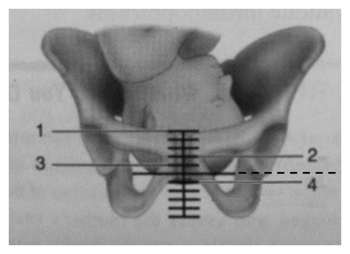

開卷有益 ／
護理師 ／ 產兒科護理學 ／ 111 年第 1 次111 年第 1 次護理師產兒科護理學試題與答案
這一頁是民國 111 年第 1 次護理師產兒科護理學的整份歷屆試題，共 80 題，題目與標準答案出自考選部「國家考試試題及測驗式試題答案」開放資料，其中 78 題附有詳解。以下逐題列出題幹、選項與答案；要計時作答或記錄成績，請用線上練習。
考選部原始場次代碼：111030
線上作答這一科 →
全部 80 題
第 1 題
有關醫療院所提供以家庭為中心照護之策略，下列敘述何者錯誤？
（A） 鼓勵留院直到適應母職（B） 推動準爸爸陪產制（C） 提供待產、分娩、恢復室合而為一的樂得兒產房（D） 協助產檯上母嬰早期肌膚接觸答案：（A）
詳解與考點 正解：題眼在「以家庭為中心照護」與「何者錯誤」——判準是尊重家庭參與、促進親子依附，並在母嬰狀況穩定時支持其返家銜接照護。（A）以「留院直到適應母職」取代依母嬰臨床狀況與家庭需求規劃出院，容易造成不必要住院，並非家庭中心照護的策略，故選 A。
B：邀請準爸爸在安全與產婦同意下陪產，可增加伴侶支持與共同參與分娩，符合家庭參與原則，故非答案。
C：樂得兒產房讓待產、分娩與恢復在較連續的同一照護環境進行，可減少轉換環境的壓力，故非答案。
D：產檯上早期肌膚接觸可促進親子依附與早期哺乳，只要母嬰情況穩定即屬適當措施，故非答案。這是最強誘答——它發生在產檯上，看似會妨礙常規處置；分辨關鍵在於穩定母嬰的必要評估可與支持肌膚接觸並行。
本題考點：家庭中心照護（family-centered care）重視家庭選擇與參與；親子依附（parent-infant attachment）可由早期接觸支持；出院準備（discharge planning）以母嬰穩定與返家照護能力為判準。
第 2 題
下列何者不是接受產前遺傳諮詢之高危險群孕婦？
（A） 懷孕年齡為 34.8 歲孕婦（B） 曾生下先天性心臟病兒之孕婦（C） 初次被診斷為妊娠糖尿病的經產婦（D） 孕婦先生是海洋性貧血帶原者答案：（C）
詳解與考點 正解：題眼在「不是產前遺傳諮詢高危險群」——判準是是否有父母帶原、既往子女先天異常或高齡等遺傳風險線索。（C）妊娠糖尿病主要關係孕期代謝與母胎照護，單憑初次診斷並不構成遺傳諮詢的典型高危險條件，故選 C。
A：接近高齡妊娠門檻的孕婦，染色體異常風險評估是產前遺傳諮詢的重要內容，故非答案。
B：曾生育先天性心臟病兒，需評估家族史、可能病因及再次妊娠風險，適合轉介諮詢，故非答案。
D：配偶為海洋性貧血帶原者時，須進一步評估孕婦帶原狀態與胎兒遺傳風險，故非答案。這是最強誘答——風險尚未由單一配偶身分完全確定；正因尚須補做孕婦本身的帶原檢測以確認雙親組合風險，仍屬遺傳諮詢的適應情境。
本題考點：產前遺傳諮詢（prenatal genetic counseling）重視高齡、家族史與既往異常妊娠；帶原者篩檢（carrier screening）須評估雙親組合；妊娠糖尿病（gestational diabetes mellitus）屬代謝性孕期問題而非典型遺傳諮詢指標。
第 3 題
下列何者不是全民健康保險於第一妊娠期婦女所提供之實驗室檢驗項目？
（A） 乙型鏈球菌篩檢（B） B 型肝炎檢查（C） 德國麻疹抗體檢驗（D） 愛滋血清抗體檢驗答案：（A）
詳解與考點 正解：題眼在「第一妊娠期」與「不是」——判準是將孕期常規檢驗依時期區分。（A）乙型鏈球菌篩檢用於評估分娩時新生兒感染風險，並非第一妊娠期的常規實驗室檢驗，故選 A。
B：B 型肝炎檢查可在孕早期辨識母體感染與後續母嬰垂直感染預防需求，故非答案。
C：德國麻疹抗體檢驗可確認孕婦免疫狀態並作孕期衛教，故非答案。
D：愛滋血清抗體檢驗可及早辨識感染並安排母嬰傳染預防措施，故非答案。這是最強誘答——它同樣屬感染篩檢，易與乙型鏈球菌混淆；分辨關鍵在於前者可於孕早期辨識，乙型鏈球菌則著重接近分娩時的定殖狀態。
本題考點：第一妊娠期檢驗（first-trimester screening）包括母體感染與免疫狀態評估；乙型鏈球菌篩檢（group B streptococcus screening）著重分娩前的垂直感染風險；孕期篩檢時點須依現行產檢指引安排。
第 4 題
有關測量胎心音的敘述，下列何者最正確？
（A） 妊娠 6 週即可用腹部超音波掃描出胎兒心跳（B） 妊娠 16 週可用杜普勒（Doppler）在平臍左右兩側探測胎心音（C） 妊娠 17～20 週可用一般聽診器在腹部聽診到胎心音（D） 妊娠 20 週可用杜普勒（Doppler）在劍突下 1 公分探測胎心音答案：（C）
詳解與考點 正解：題眼在「一般聽診器」與妊娠週數——判準是不同儀器的偵測能力不同；一般聽診器需待胎心音能透過腹壁清楚傳導後才能使用。（C）在題示的妊娠 17～20 週，以一般聽診器由腹部聽到胎心音符合此原則，故選 C。
A：腹部超音波在極早孕期的可見性受設備、掃描方式與胚胎發育狀態影響，不能把題示週數一概視為可由腹部掃描確認，故非答案。
B：杜普勒可較一般聽診器早偵測胎心音，但探測位置應隨子宮高度與胎兒位置調整，不能固定為平臍左右兩側，故非答案。
D：妊娠中期子宮與胎心位置不會固定在劍突下；（D）以單一解剖位置作為探測點是錯誤之處。這是最強誘答——杜普勒儀器選對了，但時機正確不代表固定位置正確。
本題考點：胎心音評估（fetal heart sound assessment）須配合孕週與儀器；杜普勒超音波（Doppler ultrasound）較一般聽診器早偵測；Leopold 氏觸診（Leopold maneuvers）有助依胎位尋找最清晰聽診點。
第 5 題
蔡女士，懷孕第 13 週，主訴上週出國到茲卡病毒疫區，她擔心胎兒會受到影響，護理師的回應， 下列何者適當？
（A） 解釋胎兒此時腦部已發育完全，病毒造成腦部病變機率低（B） 返家後 2 週內密切觀察是否有紅疹、發燒、關節痛等症狀（C） 建議可立即考慮做羊水茲卡病毒檢驗（D） 立即做傳染性通報，並抽血檢驗病毒答案：（B）
詳解與考點 正解：題眼在「曾到茲卡病毒疫區」與「第 13 週」——判準是先評估暴露後是否出現典型症狀，再依風險評估安排檢驗與追蹤。（B）返家後密切觀察紅疹、發燒、關節痛等症狀，能提供後續就醫與風險判斷的重要資料，故選 B。
A：胎兒腦部在孕期持續發育，不能因已進入第 13 週便宣稱腦部發育完全或風險低，故非答案。
C：羊水檢驗屬侵入性檢查，是否施作須由暴露史、症狀、檢測條件與產科專業評估決定，不是旅遊返國後立即的常規選擇，故非答案。這是最強誘答——它看似最直接檢查胎兒，但錯在尚未完成母體暴露與症狀評估便跳到侵入性處置。
D：傳染病通報與抽血檢驗須符合當時的病例定義與主管機關流程；單有旅遊史未必等同應立即通報，故非答案。
本題考點：茲卡病毒暴露（Zika virus exposure）先辨識旅遊史與症狀；孕期感染風險評估（pregnancy infection risk assessment）依個案分層追蹤；本題涉及檢驗與通報流程，現行處置應依主管機關指引。
第 6 題
羅女士，因 16 歲的女兒月經遲遲未來，經醫師診斷為透納式症候群（Turnersyndrome），有關透納 式症候群之敘述，下列何者正確？
（A） 其造成原因與目前塑化劑及環境荷爾蒙有關（B） 通常會有身材矮小、第二性徵發育不全與無法生育的問題（C） 會有月經不規則及智能遲緩的相關處置（D） 其典型症狀為小頭、手指粗短與蹼狀足答案：（B）
詳解與考點 正解：題眼在「透納氏症候群」與青春期月經未來——判準是性染色體異常造成性腺發育不全的典型表現。（B）透納氏症候群常見身材矮小、第二性徵發育不全及生育困難，能解釋原發性無月經，故選 B。
A：透納氏症候群是性染色體異常，不能歸因於塑化劑或環境荷爾蒙，故非答案。
C：其重點是性腺功能不全與原發性無月經，智能通常不以明顯遲緩為典型特徵；「月經不規則」也不如月經未來貼切，故非答案。
D：小頭、手指粗短與蹼狀足不是透納氏症候群的典型組合；其常見外觀特徵應與其他遺傳症候群區辨，故非答案。這是最強誘答——它列出多項先天外觀異常，看似符合染色體疾病；分辨關鍵在於透納氏症候群核心是女性性腺發育不全與矮小。
本題考點：透納氏症候群（Turner syndrome）為性染色體異常；性腺發育不全（gonadal dysgenesis）可造成第二性徵不足與原發性無月經；遺傳症候群鑑別（syndrome differentiation）應以核心表型而非零散外觀特徵判讀。
第 7 題
有關妊娠期婦女需增加熱量攝取之敘述，下列何者正確？
（A） 依據母體氧氣消耗增加所需熱量（B） 第一妊娠期應儲存較多熱量以利胎盤的生長（C） 應攝取較多來自高醣、高蛋白及高脂肪食物（D） 孕前 BMI 為 22 者，在第一妊娠期應攝取更多熱量答案：（A）
詳解與考點 正解：題眼在「妊娠期增加熱量」——判準是孕期能量需求來自母體代謝、組織生長與胎兒發育的整體增加。（A）母體氧氣消耗增加反映代謝需求上升，因此需以均衡飲食補足額外熱量，故選 A。
B：第一妊娠期胎盤雖持續發育，但額外熱量的需求不以「儲存較多」為原則；應依孕前營養狀態與孕期體重變化評估，故非答案。
C：孕期營養重點是均衡攝取各類營養素，不能以高醣、高蛋白及高脂肪作為概括建議，故非答案。
D：孕前 BMI 為正常範圍者仍應依妊娠期別與體重增加情形調整，不能因第一妊娠期即一律增加較多熱量，故非答案。這是最強誘答——它抓到 BMI 會影響營養規畫，但錯在忽略孕期別與個別體重趨勢同樣是判準。
本題考點：妊娠營養（pregnancy nutrition）以母胎生長與代謝需求為基礎；均衡飲食（balanced diet）優於單一高熱量飲食；孕期體重管理（gestational weight management）須結合孕前 BMI 與追蹤結果。
第 8 題
在妊娠期間，下列何項腎臟功能是降低的？
（A） 腎血漿流量（RPF）（B） 腎小管的再吸收速度（C） 對糖分吸收的閾值（D） 腎臟的排尿量答案：（C）
詳解與考點 正解：題眼在「妊娠期間」與「腎臟功能降低」——判準是孕期腎血流與腎絲球過濾增加，卻使葡萄糖較容易出現在尿液中。（C）腎小管對葡萄糖再吸收的閾值下降，較容易出現生理性糖尿，故選 C。
A：妊娠期腎血漿流量增加，以配合母體循環與腎臟灌流改變，故非答案。
B：腎小管再吸收的調節隨孕期改變，但本題所問的典型下降項目是葡萄糖再吸收閾值，而非概稱再吸收速度降低，故非答案。
D：腎絲球過濾增加常使尿量增加或頻尿更常見，不能視為排尿量降低，故非答案。這是最強誘答——頻尿也可能受子宮壓迫影響，但不論機轉為何，都不支持「排尿量降低」。
本題考點：妊娠腎臟生理（renal physiology in pregnancy）有腎血流與過濾增加；腎糖閾值（renal glucose threshold）下降可見生理性糖尿；孕期糖尿（glycosuria in pregnancy）仍須結合其他評估判讀。
第 9 題
陳女士，懷孕 28 週，有一位 4 歲的孩子小明。小明對陳女士說：「我討厭媽媽肚子裡面的小妹妹， 因為媽媽只關心她，都不和我玩」。下列護理師回應，何者最適當？
（A） 告訴小明，要學習愛妹妹（B） 讓小明用聽診器聽胎兒心跳（C） 帶小明參加產前教室（D） 利用遊戲轉移小明注意力答案：（B）
詳解與考點 正解：題眼在 4 歲孩子說「媽媽只關心她」——判準是以符合發展程度的具體方式，讓同胞理解並參與即將出生的嬰兒。（B）讓小明用聽診器聽胎兒心跳，可把抽象的「妹妹」轉成可感受的經驗，並提供被接納參與的機會，故選 B。
A：直接要求小明愛妹妹否定其嫉妒與失落感，不能協助他說出情緒，故非答案。
C：產前教室內容通常較偏成人孕產知識，不一定符合幼兒理解與參與方式，故非答案。
D：遊戲可暫時轉移注意力，但沒有回應手足競爭與被忽略感的核心需求，故非答案。這是最強誘答——遊戲確實是幼兒熟悉的媒介，但本題需要的是促進其對新生兒的具體參與，而非迴避情緒。
本題考點：手足競爭（sibling rivalry）常源於對父母關注被分走的擔心；發展適宜溝通（developmentally appropriate communication）宜採具體可感的活動；家庭準備（family preparation）應容納幼兒的負面情緒並給予參與機會。
第 10 題
有關胎兒染色體檢查的敘述，下列何者錯誤？
（A） 妊娠 5～8 週者母血唐氏症篩檢值大於 1/720 為高危險群（B） 妊娠 10 週以前施行絨毛膜取樣有斷肢畸形之風險（C） 妊娠 11～12 週是合適進行母血檢測胎兒染色體的時機（D） 妊娠 16～18 週是合適進行羊膜穿刺術的時機答案：（A）
詳解與考點 正解：題眼在「妊娠 5～8 週」——母血唐氏症篩檢屬生化指標篩檢，必須等胎盤與胎兒相關的血中標記濃度進入可判讀區間才有意義，5～8 週過早，此時抽血得不到可用以分級高低危險群的篩檢值；與 B、C、D 三個時機敘述並列時，只有 A 的施行時機不成立，故選 A。
B：絨毛膜取樣過早施行會增加胎兒肢體發育異常的風險，因此須避開過早的孕週，故非答案。
C：母血檢測胎兒染色體須在適當孕週進行，才能依檢驗特性解讀結果；題示時機與第一孕期篩檢的安排一致，故非答案。
D：羊膜穿刺通常安排在進入中期後進行，以取得羊水作胎兒染色體檢查，故非答案。這是最強誘答——它同時含有週數與侵入性檢查，易因記憶混亂誤選；分辨關鍵在於羊膜穿刺屬中期檢查，不能與絨毛膜取樣的時機混為一談。
本題考點：母血唐氏症篩檢（maternal serum screening）須在生化指標可判讀的孕週施行；絨毛膜取樣（chorionic villus sampling）須避免過早施作；羊膜穿刺（amniocentesis）安排於中期。
第 11 題
有關待產時陰道內診之敘述，下列何者錯誤？
（A） 陰道內診可評估待產婦的子宮頸擴張、變薄程度及胎膜完整性（B） 可指導待產婦深呼吸或哈氣以緩解其內診時的不適（C） 待產婦有前置胎盤為陰道內診的禁忌（D） 若待產婦已破水，應更密集陰道內診以評估其產程進展答案：（D）
詳解與考點 正解：題眼在「已破水」與「何者錯誤」——判準是破水後內診應在必要時才做，以降低上行性感染風險。（D）把已破水當作應更密集內診的理由，反而增加細菌由陰道上行的機會；產程進展應結合子宮收縮、產婦與胎兒狀況等評估，故選 D。
A：陰道內診可評估子宮頸擴張、變薄及胎膜狀態，是待產評估的一部分，故非答案。
B：指導深呼吸或哈氣可協助待產婦減輕緊張與不適，符合支持性照護，故非答案。
C：前置胎盤可能有出血風險，未確認安全前應避免陰道內診，故非答案。這是最強誘答——內診是常規產程評估，但遇到前置胎盤的出血風險時，安全優先於取得進展資料。
本題考點：待產陰道內診（vaginal examination in labor）評估子宮頸與胎膜；破水後感染預防（infection prevention after rupture of membranes）應減少不必要內診；前置胎盤（placenta previa）未排除前不宜陰道內診。
第 12 題
有關分娩的鎮痛與麻醉藥物之敘述，下列何者錯誤？
（A） marcaine 為脊髓麻醉常用藥物，術後無須平躺（B） meperidine 常用於第一產程活動期止痛用，naloxone 為解毒劑（C） meperidine 具呼吸抑制之副作用及胎兒心跳變異性減低（D） fentanyl 具呼吸抑制及低血壓之副作用，naloxone 為解毒劑答案：（A）
詳解與考點 正解：題眼在「脊髓麻醉」與「何者錯誤」——判準是脊髓麻醉後需監測低血壓、感覺與運動恢復，並依醫囑採取適當姿勢與觀察。（A）marcaine（bupivacaine）可用於脊髓麻醉，但把術後處置說成「無須平躺」過度絕對，忽略脊髓麻醉後的姿勢與併發症預防需求，故選 A。
B：meperidine 可用於分娩止痛，過量或造成呼吸抑制時 naloxone 可作為 opioid 拮抗劑，故非答案。
C：meperidine 可能造成呼吸抑制並影響胎兒心率變異性，給藥後須持續觀察母胎反應，故非答案。
D：fentanyl 為 opioid 類藥物，應留意呼吸抑制與血流動力學改變；naloxone 可拮抗其 opioid 效應，故非答案。這是最強誘答——低血壓更常與區域麻醉連結，但 opioid 仍須觀察循環反應，不能因藥物分類不同便排除。
本題考點：脊髓麻醉（spinal anesthesia）須監測感覺、循環與姿勢安全；鴉片類止痛藥（opioid analgesics）可致呼吸抑制；naloxone 為 opioid antagonist。
第 13 題
有關待產時裝置胎兒監測器的注意事項，下列何者錯誤？
（A） 子宮收縮壓力傳導器置於收縮力最強的子宮底位置（B） 將胎心率傳導器置於胎心音最清晰處（C） 應確認傳導器彈性皮帶的鬆緊度約可容納一個指頭為合宜緊度（D） 偵測到與產婦心跳一致的胎兒臍帶雜音是正常的答案：（D）
詳解與考點 正解：題眼在「胎兒監測器」與「何者錯誤」——判準是外接監測器須分別取得子宮收縮與真正胎心率，並避免把母體脈搏誤認為胎心。（D）若監測到與產婦心跳一致的訊號，應優先懷疑拾取到母體脈搏，不能視為正常胎兒臍帶雜音，故選 D。
A：外接子宮收縮壓力傳導器置於子宮底，可較清楚感受子宮收縮的張力變化，故非答案。
B：胎心率傳導器應放在腹部胎心音最清楚處，位置需隨胎位調整，故非答案。
C：彈性皮帶過鬆會使訊號中斷，過緊則造成不適；保留約一指寬的鬆緊度可兼顧固定與舒適，故非答案。這是最強誘答——「一指」像是機械式規定，但它表達的是避免過鬆或過緊的安全判準。
本題考點：電子胎兒監測（electronic fetal monitoring）須分辨子宮活動與胎心率；母體脈搏辨識（maternal pulse verification）可避免誤判胎心；外接傳導器定位（external transducer placement）依子宮底與最清晰胎心音調整。
第 14 題
待產婦的護理紀錄記載胎兒先露部位高度是-1。此紀錄結果是指胎兒先露部位為下圖那一個編號的 位置？

（A） 1（B） 2（C） 3（D） 4答案：（C）
詳解與考點 正解：題眼是「先露部位高度是 -1」，要判讀的是圖中骨盆正中央那把垂直刻度尺。圖上骨盆兩側坐骨棘連線的高度，畫著一條左右最長、並向右延伸成虛線離開骨盆的橫線，那條線就是零站（0 station）——刻度尺以它為基準，向上的每一格記為負值、向下的每一格記為正值，一格代表 1 公分。編號 1 與 3 的指引線從左側畫入、編號 2 與 4 從右側畫入。（C）編號 3 的指引線正好落在那條坐骨棘橫線往上數的第一格，代表先露部最低點在坐骨棘上方 1 公分，即 -1。故選 C。
A：編號 1 指到的是刻度尺最頂端那條長橫線，位在坐骨棘橫線之上第五格，記為 -5，相當於先露部仍高浮在骨盆入口平面、尚未下降，與 -1 差了 4 公分。
B：編號 2 指到坐骨棘橫線之上第二格，記為 -2。方向對、位置錯——它比 -1 再高 1 公分，是本題最容易誤選的一格，判讀時必須從那條貫穿坐骨棘的最長橫線開始逐格往上數，而不是憑目測抓「中間偏上」。
D：編號 4 指到坐骨棘橫線之下第一格，記為 +1，表示先露部最低點已通過坐骨棘、進入骨盆腔下段。它與 -1 的數值相同但正負相反，代表的臨床意義正好相反，是把「負值在上、正值在下」記反時會落入的選項。
本題考點：胎兒下降程度（station）的判讀基準。內診所評估的是先露部最低點與母體坐骨棘連線的相對位置：與坐骨棘同高為 0，位在坐骨棘之上以負值表示、之下以正值表示，數字即相差的公分數。看圖時的固定作法是先找出零站——它是刻度尺上最長、且與圖中兩側坐骨棘齊高的那條橫線——再由此往上或往下逐格計數，不可從刻度尺的頂端或底端起算。負值愈大表示先露部位置愈高、下降愈少；轉為正值則代表先露部已越過坐骨棘，是產程進展的重要指標，護理人員需連續評估並與子宮頸擴張、產程時間一併記錄，以判斷下降是否停滯。
第 15 題
有關剖腹產的手術前護理措施，下列何者最適當？
（A） 手術前 1 天進行腹部劃線作標記（B） 手術前一晚使用抗焦慮劑（C） 手術前 3 天進食低渣飲食（D） 手術前 1 天及手術當天應聽診胎心音 間徑單位為公分答案：（D）
第 16 題
下列何者為枕後位（OP）第一、二產程延長的主要機轉？
（A） 需要不斷的屈曲成為 LOP 位（B） 內迴轉成為枕前位，費時長（C） 在骨盆入口，不易下降（D） 實施外部轉向時，費時較長答案：（B）
詳解與考點 正解：題眼在「枕後位（OP）」與第一、二產程延長——判準是胎頭必須完成較長的內迴轉，才能以較有利的枕前位娩出。（B）枕後位需內迴轉成枕前位，旋轉角度與阻力較大而較費時，因而延長產程，故選 B。
A：屈曲有助胎頭以較小徑線通過骨盆，但不會「不斷屈曲成為 LOP 位」作為延長產程的主要機轉，故非答案。
C：OP 位的主要困難在胎頭旋轉與下降的協調，而非一開始在骨盆入口就必然不易下降，故非答案。
D：外部轉向主要用於處理胎位問題，並非待產時 OP 位第一、二產程延長的主要機轉，故非答案。這是最強誘答——它同樣提到「轉向」，但外部轉向與產程中的胎頭內迴轉是不同層次的處置與機轉。
本題考點：枕後位（occiput posterior position）常需較長內迴轉；內迴轉（internal rotation）影響胎頭通過骨盆的效率；產程遲滯（labor dystocia）應評估胎位、收縮與母體骨盆條件。
第 17 題
陳女士，待產 12 小時後生下一位健康新生兒。有關護理師執行的第四產程的護理措施，下列何者不 適宜？
（A） 鼓勵產婦與寶寶做眼對眼的接觸（B） 以包布覆蓋寶寶保暖並鼓勵觸摸寶寶（C） 延後打維生素 K1 及先進行肌膚接觸（D） 將新生兒放置保溫箱讓產婦休息答案：（D）
詳解與考點 正解：題眼在「健康新生兒」與第四產程「不適宜」——判準是母嬰穩定時優先保暖、早期肌膚接觸與親子依附，而非例行分離。（D）將健康新生兒放入保溫箱只為讓產婦休息，會中斷早期親子接觸；保溫箱應有明確保溫或醫療需要才使用，故選 D。
A：鼓勵眼對眼接觸可促進親子依附與父母辨識嬰兒線索，故非答案。
B：以包布保暖並鼓勵觸摸寶寶，可兼顧體溫維持與親子互動，故非答案。
C：在母嬰穩定且不妨礙必要處置時，可先支持早期肌膚接觸再完成維生素 K1 注射，故非答案。這是最強誘答——維生素 K1 是重要預防措施，但「延後」不等於省略；分辨關鍵在於短暫調整順序以完成早期接觸。
本題考點：第四產程（fourth stage of labor）重視母嬰穩定與依附；早期肌膚接觸（skin-to-skin contact）促進保暖與互動；常規新生兒處置（routine newborn care）應在不影響安全下整合進母嬰照護。
第 18 題
陳女士，產後 1 週，表示有易怒、失眠、沒有食慾、注意力不集中的情形，其最有可能的情況為何？
（A） 產後情緒低落（B） 產後憂鬱症（C） 產後精神病（D） 產後躁鬱症答案：（A）
詳解與考點 正解：題眼在「產後 1 週」及易怒、失眠、食慾差、注意力不集中——判準是症狀的時間、嚴重度與是否影響現實功能。（A）產後情緒低落常在產後早期出現情緒不穩、易哭或易怒等表現，通常屬暫時性調適反應，故選 A。
B：產後憂鬱症的症狀較持續且嚴重，常明顯影響照顧嬰兒與日常功能；本題未提供持續惡化或顯著功能受損線索，故非答案。
C：產後精神病通常有幻覺、妄想、嚴重混亂或危及自己與嬰兒的風險，屬急症，本題沒有這些訊號，故非答案。
D：產後躁鬱症需見明顯躁期或鬱期的病程證據，不能僅憑短期易怒與失眠判定，故非答案。這是最強誘答——失眠與注意力不集中也可見於憂鬱症；分辨關鍵在於本題的產後早期、短暫且未示功能嚴重受損。
本題考點：產後情緒低落（postpartum blues）多為早期暫時情緒波動；產後憂鬱症（postpartum depression）須評估持續性與功能受損；產後精神病（postpartum psychosis）出現安全風險時須立即處置。
第 19 題
護理師進行產後子宮復舊評估時，下列何者正確？
（A） 宜先排空膀胱再進行（B） 維持半坐臥姿勢（C） 評估時以單手進行（D） 剖腹產不宜進行觸診答案：（A）
詳解與考點 正解：題眼在「產後子宮復舊評估」——判準是先排除會使子宮位置偏移或觸診不準的因素。（A）應先請產婦排空膀胱；膀胱脹滿會推擠子宮、使子宮底偏高或偏向一側，影響復舊判讀，故選 A。
B：評估時宜採平躺、屈膝等利於腹肌放鬆的姿勢；半坐臥不利於準確觸診子宮底，故非答案。
C：一手應置於恥骨聯合上方固定子宮下段，另一手觸診子宮底，以避免用力不當造成不適或子宮內翻風險，故非答案。
D：剖腹產婦仍需評估子宮復舊，只是應注意手術傷口疼痛並採溫和觸診，故非答案。這是最強誘答——剖腹產確有腹部傷口，但傷口不會取消產後出血與子宮復舊的必要評估。
本題考點：子宮復舊（uterine involution）以子宮底高度、硬度與位置評估；膀胱脹滿（bladder distention）可造成子宮偏移；雙手觸診（bimanual palpation）可固定子宮下段並提升安全性。
第 20 題
下列那種情況容易發生產後痛（after pain）？
（A） 經產婦（B） 羊水過少（C） 單胞胎（D） 剖腹產答案：（A）
詳解與考點 正解：題眼在「產後痛」——判準是子宮反覆收縮時的疼痛在子宮肌纖維較難維持持續張力者更明顯。（A）經產婦的子宮肌張力相較初產婦較易反覆鬆弛與收縮，尤其在哺乳時受催產素影響，較容易出現產後痛，故選 A。
B：羊水過少不是產後子宮收縮痛的典型高風險因素，故非答案。
C：單胞胎本身不會使子宮過度擴張，與產後痛較強的典型情境不符，故非答案。
D：剖腹產婦也可能感受子宮收縮，但「剖腹產」不是產後痛最具代表性的風險條件，故非答案。這是最強誘答——手術傷口痛容易與產後痛混淆；分辨關鍵在於產後痛指子宮收縮痛，不等同腹部切口疼痛。
本題考點：產後痛（afterpains）來自子宮收縮；經產婦（multipara）較常出現較明顯反覆收縮痛；哺乳反射（oxytocin reflex）可增加子宮收縮感。
第 21 題
教導產婦執行產後運動時，膝胸臥式的主要目的為何？
（A） 促進子宮恢復正常位置（B） 促進傷口癒合（C） 預防乳房鬆弛（D） 改善尿失禁答案：（A）
詳解與考點 正解：題眼在「產後運動」與「膝胸臥式」——此姿勢利用骨盆抬高與重力改變子宮的位置關係，主要用於協助子宮恢復較正常的前傾位置，故選 A。
B：傷口癒合主要仰賴傷口照護、營養與感染預防；膝胸臥式不是促進會陰或腹部傷口癒合的直接措施，故非答案。
C：乳房鬆弛與乳房支持、哺乳及乳房照護較相關，膝胸臥式不作用於乳房組織，故非答案。
D：改善尿失禁須依原因進行骨盆底肌訓練等措施；膝胸臥式的目標是子宮位置，不是骨盆底肌收縮訓練。這是最強誘答——兩者都屬產後運動，但作用的解剖構造不同。
本題考點：膝胸臥式（knee-chest position）可協助調整產後子宮位置；產後運動應依目標區分子宮復舊（uterine involution）與骨盆底肌訓練（pelvic floor muscle training）。
第 22 題
王女士，從未避孕，產後出院前表示：「我暫時不想懷孕，可是不想避孕，覺得自然比較好。」下列 敘述何者最適當？
（A） 如果可以無論晝夜親餵且月經未恢復，在 6 個月內可避孕（B） 從接著的月經來潮第 1 天開始算，受精的危險期是第 11 天到第 19 天（C） 接著的月經來潮日期不一定，在那之前是安全的，可以不用避孕（D） 每天量基礎體溫，從體溫降低那天開始連續 2 天避免性交，其他日子可以性交答案：（A）
詳解與考點 正解：題眼在「產後」「不想懷孕」與「不想避孕」——仍要先釐清自然避孕法的適用條件。若產婦能持續、頻繁且不分晝夜親餵，且月經尚未恢復，產後 6 個月內可運用泌乳性閉經作為避孕方法，故選 A。
B：排卵日會隨月經週期而變，不能以所有人的固定第 11 天至第 19 天作為通用危險期；自然週期法必須依個人週期規律性判讀，故非答案。
C：產後即使月經未復，也可能先排卵後才出現第一次月經；把未來月經來潮前一概視為安全期，會漏掉受孕風險，故非答案。
D：基礎體溫法是利用排卵後體溫持續上升的型態回溯判讀，並非從體溫降低日起只避孕 2 天。這是最強誘答——它同樣提到量體溫，但把可受孕期間的判讀方向與時段弄反了。
本題考點：泌乳性閉經法（lactational amenorrhea method）須同時符合持續親餵、未恢復月經與產後早期等條件；自然生育調節（fertility awareness-based methods）不能把產後無月經直接等同無排卵。
第 23 題
有關使用荷爾蒙藥物或避孕器的敘述，下列何者正確？
（A） 子宮內避孕器 Mirena® 在分娩後 4～6 週置入子宮，效期 3 年（B） 混合型避孕藥在月經結束後 1 週開始吃，可使子宮頸黏液變稠（C） 迷你丸（mini pills）為單一黃體素製劑，因干擾正常排卵而避孕（D） Depo-Provera® 注射後不會立即有避孕效果，建議先用保險套避孕答案：（D）
詳解與考點 正解：題眼在「荷爾蒙藥物或避孕器」——要分辨各方法的成分、起始時點與是否需要備援避孕。Depo-Provera® 為黃體素注射避孕法；若未在適當週期時點施打，初期應以保險套等備援方法避免受孕，故官方答案為 D。本題不同起始情境的立即避孕效果與備援天數會受現行仿單及臨床指引影響，應以當次指示為準。
A：Mirena® 的效期不是題述的 3 年；雖然產後子宮內避孕器可依產後狀況安排置入，但不能由此推得題述效期正確，故非答案。
B：混合型口服避孕藥的起始方式應依月經週期與醫囑判定，不是固定在月經結束後 1 週才開始；其避孕機轉也不只改變子宮頸黏液，故非答案。
C：迷你丸（mini pills）是單一黃體素製劑，主要機轉是使子宮頸黏液變稠等作用，不能概括成以干擾正常排卵為主。這是最強誘答——它把「黃體素製劑」說對了，卻把主要判準換成不穩定的排卵抑制。
本題考點：黃體素注射避孕法（depot medroxyprogesterone acetate）在非建議起始時點須考慮備援避孕；迷你丸（progestin-only pill）的重要機轉是改變子宮頸黏液；子宮內避孕器（intrauterine device）的產品效期須依現行仿單確認。
第 24 題
李女士，採脊髓阻斷麻醉剖腹產，產後第 1 天主訴噁心感，起床的時候頭很痛，躺下頭痛就好些。 下列何項護理指導較適當？
（A） 說明是因為禁食較久，導致胃不適與血糖低，建議進食（B） 說明是腦脊髓液不平衡，建議暫時頭不抬高平躺並補充水分（C） 說明是麻醉藥的關係，等藥代謝後會緩解，提供檸檬水緩解噁心感（D） 評估新生兒照顧能力，可能是擔心能力不足太過焦慮引起答案：（B）
詳解與考點 正解：題眼在「脊髓阻斷麻醉」後「起床頭痛、躺下好轉」——這是姿勢性頭痛的典型線索，與腦脊髓液流失後壓力改變有關。護理上應暫時平躺、避免抬頭，並依醫囑補充水分與持續評估，故選 B。
A：禁食可能造成飢餓或胃部不適，卻無法解釋頭痛隨坐起加重、平躺緩解的姿勢性特徵，故非答案。
C：麻醉藥代謝可使部分不適改善，但不能忽略此種特異的姿勢性頭痛；只給檸檬水屬於未針對原因的處置，故非答案。
D：焦慮可引起頭痛，但題幹已提供麻醉後且與姿勢明確相關的生理線索，應先依生理原因處理。這是最強誘答——心理支持可並行，卻不能取代對可能麻醉後併發症的評估。
本題考點：硬脊膜穿刺後頭痛（post-dural puncture headache）常呈坐起加劇、平躺緩解；護理優先序（nursing priority）先處理明確的生理問題，再處理心理社會因素。
第 25 題
王女士表示：「我不准我兒子來，他們天天吵，太皮了，萬一妹妹怎樣就麻煩了。」下列敘述何者最 適當？
（A） 這樣的考量是正確的，大孩子如果太皮可能讓妹妹受傷（B） 請其他家人一起照看大孩子，讓他們遠遠看妹妹就沒問題了（C） 有家人在旁協助，讓大孩子撫摸或擁抱妹妹可以增強依附關係（D） 跟哥哥們說清楚，且要訂好規則，這樣他們就可以自己抱妹妹答案：（C）
詳解與考點 正解：題眼在母親因擔心哥哥「太皮」而完全禁止接近新生兒——判準是手足依附與安全要同時兼顧。有家人在旁協助時，讓大孩子以溫和方式撫摸或擁抱妹妹，可建立被接納感與手足依附，又能由成人即時維護安全，故選 C。
A：一概隔離雖看似最安全，卻容易加深大孩子被取代的感受，未兼顧手足關係的建立，故非最適當。
B：只讓孩子遠遠看妹妹，仍限制了在成人監督下進行安全接觸的機會，對促進依附較不足，故非答案。
D：年幼手足不宜僅靠口頭規則就自行抱新生兒，因其動作控制與危險判斷尚不穩定，仍須成人在旁。這是最強誘答——「訂規則」方向正確，錯在把成人監督提前撤除。
本題考點：手足依附（sibling attachment）可透過安全參與新生兒照護建立；兒童安全（child safety）須由成人監督，而非只靠口頭規範。
第 26 題
新生兒出生後 1 分鐘，哭聲宏亮，呼吸規則，心跳 128 次／分，四肢略屈曲，身體呈粉紅色，四肢為 藍色，阿帕嘉計分（Apgar score）為幾分？
（A） 7 分（B） 8 分（C） 9 分（D） 10 分答案：（B）
詳解與考點 正解：題眼在出生後 1 分鐘的五項阿帕嘉評估。逐項計分：哭聲宏亮、呼吸規則為呼吸 2 分；心跳 128 次／分為心率 2 分；四肢略屈曲為肌肉張力 1 分；身體粉紅、四肢發紺為皮膚顏色 1 分；哭聲宏亮代表受刺激反應良好為反射反應 2 分。合計 2+2+1+1+2=8 分，故選 B。
A：7 分通常是少算一項正常反射反應或呼吸表現的結果；題幹的宏亮哭聲同時支持呼吸與反射反應良好，故非答案。
C：9 分等於把四肢略屈曲或肢端發紺其中一項誤給滿分；兩者都不是 2 分，故非答案。
D：10 分須五項皆滿分，但本題肌肉張力僅略屈曲、四肢仍藍色，故不可能。這是最強誘答——新生兒哭聲宏亮容易讓人直覺給滿分，仍須逐項計算。
本題考點：阿帕嘉評分（Apgar score）評估心率、呼吸、肌肉張力、反射反應與皮膚顏色；肢端發紺（acrocyanosis）與四肢僅略屈曲均不給滿分。
第 27 題
初產婦照顧新生兒的各項行為，下列何者最不適當？
（A） 洗澡過後全身擦上精油，預防皮膚乾裂（B） 餵奶時，以搖籃式抱法，以手臂的彎曲處支持新生兒頭部，以另一隻手支撐臀部（C） 在餵奶前或是餵奶後 1 小時進行沐浴（D） 以直立式抱法，讓新生兒靠在肩膀上，一隻手支撐新生兒背臀部，一隻手拍打嗝答案：（A）
詳解與考點 正解：題眼在「最不適當」與新生兒洗澡後的皮膚照護——新生兒皮膚屏障尚未成熟，精油可能造成刺激、接觸性皮膚炎或香味暴露風險，不能為預防乾裂而全身塗擦，故選 A。
B：搖籃式抱法以手臂彎曲處支持頭頸、另一手支撐臀部，能維持新生兒頭頸與軀幹的安全對線，故非答案。
C：餵奶前或餵奶後間隔一段時間沐浴，可避免剛餵完就因翻動、壓迫腹部而吐奶，故屬適當安排。
D：直立抱並支撐背臀部、輕拍協助排氣，是餵食後常用且安全的拍嗝方式，故非答案。這是最強誘答——拍打聽起來較粗魯，但正確手法是輕拍，並非用力拍擊。
本題考點：新生兒皮膚照護（newborn skin care）應避免不必要的刺激性塗抹；新生兒抱姿（infant holding）須持續支撐頭頸與臀部；餵食後排氣（burping）可採直立抱姿。
第 28 題
王小弟，出生 1 個月，有關評估其生殖器之描述，下列何者最正確？
（A） 睪丸位於腹股溝，陰囊皺摺少（B） 睪丸已下降，陰囊皺摺多（C） 睪丸未下降，陰囊無皺摺（D） 陰囊表面光滑，無皺摺答案：（B）
詳解與考點 正解：題眼在「出生 1 個月」的足月新生兒生殖器評估——男嬰足月成熟的外生殖器特徵為睪丸已下降至陰囊，且陰囊皺摺較多，故選 B。
A：睪丸仍位於腹股溝且陰囊皺摺少，較不符合足月男嬰的成熟外觀，故非答案。
C：睪丸未下降、陰囊無皺摺同樣不符合題幹年齡下典型的足月成熟表現，故非答案。
D：陰囊光滑無皺摺偏向未成熟的外觀，與睪丸已下降的足月特徵不一致。這是最強誘答——只看陰囊表面而忽略睪丸位置，容易把成熟度判錯。
本題考點：新生兒成熟度評估（newborn maturity assessment）可觀察睪丸下降（testicular descent）與陰囊皺摺；外生殖器外觀須與足月或早產的整體成熟度一起判讀。
第 29 題
有關新生兒護理之敘述，下列何者正確？①出生後給與抗生素眼藥膏預防淋病性結膜炎 ②以吸球 清除分泌物時應先抽吸鼻腔 ③以 75%酒精消毒臍斷面 ④頭圍量法為額頭經雙耳中端到枕骨粗隆
（A） ②③（B） ①④（C） ②④（D） ①③答案：（D）
詳解與考點 正解：題眼在四個新生兒常規照護敘述，須逐一判讀。①出生後給予預防性眼藥膏可降低淋病性結膜炎風險，正確；③臍部照護重點是保持清潔乾燥，題述以 75% 酒精消毒臍斷面為本題採用的正確作法。因此成立的是①③，故選 D。
A：②③包含②，但以吸球清除分泌物時應先抽吸口腔，再抽吸鼻腔，以免鼻腔刺激引發吸氣時將口腔分泌物吸入，故非答案。
B：①④包含④，但頭圍應繞過眉弓上方與枕骨最突處量取最大周徑，不是經雙耳中端的路徑，故非答案。
C：②④同時含兩個錯誤子敘述，故非答案。這是最強誘答——吸痰順序與頭圍路徑都是常見的「方向看似合理」記憶陷阱，必須分別核對。
本題考點：新生兒眼部預防（ophthalmia neonatorum prophylaxis）可降低淋病性結膜炎風險；球吸器抽吸（bulb suctioning）先口後鼻；頭圍（head circumference）量取額部與枕骨最大周徑。
第 30 題
子癇前症孕婦以硫酸鎂（MgSO4）治療期間的護理評估重點，下列何者最重要？
（A） 意識狀態之變化（B） 身體平衡反應（C） 深部肌腱反射（D） 指尖再灌流檢測答案：（C）
詳解與考點 正解：題眼在子癇前症使用「硫酸鎂」——護理判準是及早偵測鎂離子作用過強所致的神經肌肉抑制。深部肌腱反射減弱或消失是重要警訊，應優先規律評估，故選 C。
A：意識狀態改變也須監測，但較非鎂毒性最早、最具特異性的床邊神經肌肉指標，故非答案。
B：身體平衡反應不屬於硫酸鎂治療期間的核心毒性監測項目，故非答案。
D：指尖再灌流反映周邊灌流，不能直接偵測鎂離子對神經肌肉傳導與呼吸的抑制。這是最強誘答——它同屬安全評估，卻沒有對準此藥最重要的毒性機轉。
本題考點：硫酸鎂（magnesium sulfate）可用於子癇前症（preeclampsia）的抽搐預防；深部肌腱反射（deep tendon reflex）是神經肌肉抑制的重要監測指標。
第 31 題
王女士，Rh(-)，初產下一位 Rh(+)的女嬰，母女均安。為了預防下次懷孕時產生胎兒大量溶血，給予 母體注射 Rh0 免疫球蛋白之時機，下列何者最適當？
（A） 此胎產後 72 小時內（B） 此胎產後 6～8 週（C） 下次懷孕 28 週時（D） 下次懷孕產後立即答案：（A）
詳解與考點 正解：題眼在 Rh(-) 母體生下 Rh(+) 嬰兒——判準是必須在母體尚未因胎兒紅血球暴露而產生致敏反應前給予被動抗體。Rh0 免疫球蛋白應於此胎產後 72 小時內注射，以預防未來妊娠的 Rh 同種免疫，故選 A。
B：產後 6～8 週已錯過預防產後致敏的關鍵時機，故非答案。
C：下次懷孕時才處理，不能補救這次生產後可能已發生的母體致敏，故非答案。
D：下次懷孕產後立即注射同樣過晚，因致敏可能已在本胎生產後發生。這是最強誘答——它也提到產後注射，但忽略預防必須針對「本胎」的胎母出血暴露。
本題考點：Rh 同種免疫（Rh alloimmunization）源於 Rh(-) 母體接觸 Rh(+) 胎兒紅血球；Rh0 免疫球蛋白（Rho(D) immune globulin）在產後時限內施打可提供被動免疫並降低後續妊娠風險。
第 32 題
有關患有心臟病的孕婦最易發生心臟衰竭的時期，下列何者錯誤？
（A） 懷孕 22～26 週（B） 懷孕 28～32 週（C） 待產陣痛時（D） 產後 48 小時內答案：（A）
詳解與考點 正解：題眼在心臟病孕婦與「最易發生心臟衰竭的時期」——判準是循環血容量、心輸出量及分娩前後血液回流增加的高負荷階段。懷孕 22～26 週並非題目列出的典型最高風險時期，故 A 為錯誤應選項。
B：懷孕 28～32 週時循環負荷明顯增加，心臟儲備不足者較易失代償，故非答案。
C：待產陣痛伴隨疼痛、焦慮與血液動力變化，會提高心臟工作負荷，故為高風險時段。
D：產後早期子宮收縮與體液重新分布會增加回心血量，心臟病病人仍須嚴密觀察，故非答案。這是最強誘答——生產已結束不代表循環負荷立即消失，產後回流增加反而可能誘發失代償。
本題考點：妊娠心臟病（heart disease in pregnancy）的失代償與血流動力負荷（hemodynamic load）相關；產後早期（early postpartum period）仍是心衰竭觀察重點。
第 33 題
有關孕婦接受 B 群（乙型）鏈球菌篩檢之敘述，下列何者錯誤？
（A） 以避免垂直感染新生兒（B） 建議孕婦在懷孕 35～37 週間進行篩檢（C） 陽性者，在分娩前 4 小時給予抗生素（D） 陽性者，建議採取剖腹產答案：（D）
詳解與考點 正解：題眼在 B 群鏈球菌篩檢與「何者錯誤」——篩檢目的在辨識分娩時可能垂直傳播給新生兒的風險，陽性處置核心是分娩期抗生素預防，不是以剖腹產取代感染預防，故 D 為應選項。
A：B 群鏈球菌篩檢可用來降低新生兒早發性感染的垂直傳播風險，故正確。
B：題述 35～37 週間篩檢是本題採用的常規產前篩檢時點，故非答案。
C：陽性者於分娩期給予抗生素，是降低新生兒感染風險的處置原則；實際開始時點與藥物選擇應依現行指引及臨床情境執行。這是最強誘答——「抗生素」方向正確，不能把題述時點誤解成剖腹產適應症。
本題考點：B 群鏈球菌（group B Streptococcus）可於分娩期垂直傳播；產前篩檢（antenatal screening）陽性以分娩期抗生素預防（intrapartum antibiotic prophylaxis）為核心，而非例行剖腹產。
第 34 題
有關子宮內膜癌之敘述，下列何者錯誤？
（A） 常見症狀為不正常陰道出血（B） 是發生在子宮內最常見的癌症（C） 病人出現症狀時多已進入晚期（D） 診斷檢查以子宮內膜刮搔術（D&C）為主答案：（C）
詳解與考點 正解：題眼在子宮內膜癌與「何者錯誤」——不正常陰道出血通常會使病人較早就醫，因而能在較早期被診斷；「出現症狀時多已進入晚期」與此疾病的典型發現方式不符，故 C 為應選項。
A：不正常陰道出血是子宮內膜癌的重要警訊，尤其停經後出血應盡快評估，故正確。
B：子宮內膜癌是子宮體常見的惡性腫瘤，題述方向正確，故非答案。
D：子宮內膜取樣可取得診斷所需組織；子宮內膜刮搔術（D&C）是題述的診斷方式之一，故非答案。這是最強誘答——D&C 不是唯一取樣方法，但「以此取得組織診斷」並不因此成為錯誤敘述。
本題考點：子宮內膜癌（endometrial cancer）的警訊是不正常陰道出血（abnormal uterine bleeding）；子宮內膜取樣（endometrial sampling）用於病理診斷；症狀出現早有助於及早發現。
第 35 題
有關卵巢癌的醫療措施，下列敘述何者錯誤？
（A） 以手術治療合併化學治療為主流（B） 分期手術（staging surgery）前應進行腸道準備（C） 減積手術（debulking surgery）就是儘可能將所有的卵巢腫瘤或已經擴散之腫瘤切除乾淨（D） 初診斷之卵巢癌化療藥物以微脂體小紅莓（Lipo-Dox）為首選答案：（D）
詳解與考點 正解：題眼在初診斷卵巢癌的「首選」化療藥物——治療須依病理、分期與腫瘤科方案決定，不能將微脂體小紅莓（Lipo-Dox）概括為所有初診斷病人的首選；它較常見於特定情境的治療選項，故 D 為應選項。
A：卵巢癌常以手術完成診斷、分期與腫瘤減積，並依病況合併全身性治療，故題述為主流方向。
B：分期手術可能涉及腸道處置與腹腔評估，術前腸道準備應依手術計畫及醫囑安排，故非答案。
C：減積手術（debulking surgery）的目的正是盡可能切除可見腫瘤，以降低殘存腫瘤負荷，故非答案。這是最強誘答——「切除乾淨」聽來絕對，但它描述的是減積手術追求最大限度切除的治療目標。
本題考點：卵巢癌（ovarian cancer）治療結合分期手術（staging surgery）、腫瘤減積手術（cytoreductive surgery）與依個案決定的化學治療（chemotherapy）；藥物首選須依現行腫瘤科方案，不可一概而論。
第 36 題
有關 HPV 疫苗，下列敘述何者正確？
（A） 接種疫苗後，仍需定期的子宮抹片檢查（B） 注射一劑終生有效（C） 疫苗針對 HPV 型別有 16、18、30、31（D） 子宮頸癌有 60～70%由 HPV 第 30、31 型引起答案：（A）
詳解與考點 正解：題眼在 HPV 疫苗與子宮頸癌預防——疫苗可預防部分高風險 HPV 型別感染，卻不能涵蓋所有致癌型別，也不能清除接種前已存在的感染，因此接種後仍需定期接受子宮頸抹片檢查，故選 A。
B：疫苗不是注射一劑就終生有效；接種劑次與間隔應依現行疫苗產品仿單及公衛建議完成，故非答案。
C：16、18 型屬各廠牌 HPV 疫苗共同涵蓋、與子宮頸癌關聯最強的高風險型別，本選項的錯處在把 30、31 併入涵蓋名單；四價與九價疫苗另涵蓋其他型別，實際涵蓋範圍依產品而定，故非答案。
D：子宮頸癌大部分與 16、18 型相關，題述把主要型別錯置為 30、31。這是最強誘答——它同樣列出數字型別，但型別編號相近不能代替風險分類的判讀。
本題考點：人類乳突病毒疫苗（human papillomavirus vaccine）是初級預防（primary prevention）；子宮頸抹片（cervical cytology）屬篩檢，接種後仍不可省略；16、18 型為子宮頸癌最主要的相關型別。
第 37 題
陰道鏡檢查的最大優點是可清楚檢測子宮那一個部位之病灶？
（A） 陰道前壁與子宮頸交接處（B） 陰道後壁與子宮頸交接處（C） 子宮頸內口與子宮體交接處（D） 子宮頸轉換區答案：（D）
詳解與考點 正解：題眼在陰道鏡檢查的「最大優點」——陰道鏡能放大觀察子宮頸表面，特別適合辨識鱗狀與柱狀上皮交界附近的轉換區病灶，故選 D。
A：陰道前壁與子宮頸交接處不是子宮頸癌前病變最主要的觀察焦點，故非答案。
B：陰道後壁與子宮頸交接處同樣不是陰道鏡最具診斷價值的典型部位，故非答案。
C：子宮頸內口與子宮體交接處較深，非陰道鏡直接清楚觀察的主要區域。這是最強誘答——它也位於子宮頸附近，但檢查優勢在可視的轉換區，而非子宮腔方向的內口。
本題考點：陰道鏡檢查（colposcopy）可放大觀察子宮頸表面；子宮頸轉換區（transformation zone）是癌前病變與取樣評估的重要區域。
第 38 題
王女士，已婚，疑似有骨盆腔炎，有關評估其臨床徵候的敘述，下列何者正確？
（A） 下腹兩側鈍鈍悶痛（B） 腹部腫大，腰圍變大（C） 原發性月經過少（D） 內診子宮頸有移動性疼痛本題送分，無標準答案
第 39 題
容易出現經前症候群的女性生命週期為那一時期？
（A） 輸卵管結紮後的中年時期（B） 停經前幾年的老年時期（C） 生產後 6 個月青年時期（D） 初經階段年輕時期答案：（D）
詳解與考點 正解：題眼在「經前症候群」與容易出現的生命週期——經前症候群與月經週期中的荷爾蒙波動相關，常在初經後的年輕生育年齡階段開始出現，故選 D。
A：輸卵管結紮是避孕手術，不是經前症候群的典型生命週期起點，故非答案。
B：停經前可有不同的荷爾蒙變化，但題述「老年時期」不符合仍有規律經前期可供判讀的核心概念，故非答案。
C：產後 6 個月是否排卵與月經恢復差異很大，不能作為容易發生經前症候群的典型階段。這是最強誘答——產後也有荷爾蒙變化，但不等於具有經前症候群所需的週期性經前模式。
本題考點：經前症候群（premenstrual syndrome）與排卵後週期性症狀相關；生育年齡（reproductive age）有規律月經週期時，才適合辨識經前症狀的時間關聯。
第 40 題
有關乳房纖維腺瘤之敘述，下列何者正確？
（A） 多發生於 30 歲以上之婦女（B） 為最常見的乳房良性腫瘤（C） 病人常因感到疼痛而就醫（D） 多為界限不明之腫塊答案：（B）
詳解與考點 正解：題眼在乳房纖維腺瘤的良性腫瘤特徵——纖維腺瘤是常見的乳房良性腫瘤，通常可觸及界限清楚、可移動的腫塊，故選 B。
A：纖維腺瘤較常見於較年輕的女性，不能以「多發生於 30 歲以上」概括，故非答案。
C：纖維腺瘤多為無痛性腫塊，病人常因摸到腫塊而就醫，不是以疼痛為典型主訴，故非答案。
D：其典型觸診特徵是界限較清楚而非不明。這是最強誘答——良性不表示所有腫塊都安全，但界限清楚與可移動確是纖維腺瘤的重要線索。
本題考點：乳房纖維腺瘤（fibroadenoma）是常見良性乳房腫瘤（benign breast tumor）；典型表現為無痛、界限清楚且可移動的腫塊，仍應接受適當評估。
第 41 題
因應少子化時代來臨，為保護兒童，兒童及少年福利與權益保障法規，下列何者錯誤？
（A） 醫護人員執行業務時知悉兒童及青少年有施用毒品時，應於 24 小時內通報相關主管機關（B） 兒童及少年福利與權益保障法主要保護 20 歲以下之兒童及青少年（C） 任何人對兒童及少年不得有遺棄、身心虐待、猥褻或性交行為（D） 孕婦不得吸菸、酗酒、嚼檳榔或施用毒品等有害胎兒發育之行為答案：（B）
詳解與考點 正解：題眼在《兒童及少年福利與權益保障法》與「何者錯誤」——法定保護對象以未滿 18 歲者的兒童及少年為核心，不是 20 歲以下，因此 B 為應選項。法規的通報時限與適用要件具有時效敏感性，實務應以現行法規及主管機關指引確認。
A：醫護人員執行業務知悉兒童及少年有危害情形時，具有依規定通報的保護責任；本題所列時限屬法規細節，應依現行規定執行，故非答案。
C：禁止遺棄、身心虐待、猥褻或性交等侵害行為，符合保護兒童及少年的基本原則，故非答案。
D：禁止孕婦從事可能危害胎兒發育的吸菸、酗酒、嚼檳榔或施用毒品等行為，符合胎兒與兒童健康保護的立法目的，故非答案。這是最強誘答——它規範的是孕期行為，看似不屬兒少保護，實際上保護目的涵蓋胎兒健康。
本題考點：兒童及少年福利與權益保障（Protection of Children and Youths Rights and Welfare）以未滿 18 歲者為保護核心；保護性通報（mandatory reporting）是醫護人員的重要責任；法規適用與時限須以現行條文確認。
第 42 題
當發現 8 個月大的張小弟口中塞有異物，有意識、呼吸困難，下列措施何者最適當？
（A） 挖出異物後，於兩乳頭連線下執行心外按壓（B） 挖出異物後，蓋住口鼻給予人工呼吸（C） 張小弟頭低於軀幹，於肩胛骨間叩擊 5 下，兩乳頭連線下壓胸 5 下（D） 雙手環抱張小弟腰部，於劍突下連續向上推擠 5 下答案：（C）
詳解與考點 正解：題眼在「8 個月大、有意識、呼吸困難」——這是嬰兒嚴重異物哽塞且仍有反應的情境，應採嬰兒異物哽塞排除法。先使頭部低於軀幹，以掌根於肩胛骨間叩擊 5 下，再翻成仰臥姿勢，於兩乳頭連線下方施行胸部推擠 5 下；兩種動作交替進行，故選 C。
A：心外按壓適用於無反應且無正常呼吸、需啟動心肺復甦術時；本題病童仍有意識，不能以心外按壓取代異物排除。且不可在未看見異物時盲目挖取，以免把異物推得更深。
B：人工呼吸是無正常呼吸時的復甦措施。病童目前的問題是氣道異物阻塞，應先排除異物；若已能直接看見異物才可小心取出，不能把「挖出異物」當作例行的第一步。
D：腹部推擠法主要用於較大兒童與成人；嬰兒腹部器官較脆弱，應使用背部叩擊與胸部推擠。這是最強誘答——兩者都是哽塞急救手法，但分辨關鍵在於病童未滿 1 歲，不能使用腹部推擠。
本題考點：嬰兒異物哽塞（infant foreign-body airway obstruction）以背部叩擊與胸部推擠交替處置；嬰兒與兒童的異物排除法（foreign-body relief maneuver）須按年齡選擇；無反應、無正常呼吸才進入心肺復甦術（cardiopulmonary resuscitation）。
第 43 題
有關遭受性虐待後之兒童可能出現的行為表現，下列敘述何者不適當？
（A） 害怕獨處，討厭他人碰觸身體（B） 出現複雜或不合宜的性知識概念（C） 攻擊性強，說謊行為，但無身體發展遲滯（D） 情緒沮喪退縮，對他人充滿敵意、不信任答案：（C）
詳解與考點 正解：題眼在「遭受性虐待後」與「何者不適當」——判準是辨認創傷後常見的情緒、依附與性化行為，而不是用單一身體發展表現排除虐待。受性虐待兒童可出現攻擊、說謊等外化行為，但「無身體發展遲滯」不是其特徵，也不能據以界定或排除性虐待，故 C 為應選項。
A：害怕獨處、抗拒他人碰觸身體，可能反映界限被侵犯後的恐懼與警覺，是可見的行為警訊，故非答案。
B：出現不符合年齡或情境的複雜性知識與性化言行，是評估兒童性虐待時需留意的線索，故非答案。
D：沮喪退縮、敵意及不信任，可見於受創後對他人與環境失去安全感的反應，故非答案。這是最強誘答——敵意看似與「退縮」相反，實際上兩者可在同一名受創兒童身上交替出現。
本題考點：兒童性虐待（child sexual abuse）的警訊包含年齡不相稱的性化行為；創傷反應（trauma response）可呈現退縮、恐懼或攻擊；兒童保護評估（child protection assessment）須整合行為、情緒與情境，不能由單一表徵定論。
第 44 題
有關新生兒搖晃症候群（Shaken Baby Syndrome）的敘述，下列何者錯誤？
（A） 屬於兒童虐待行為表現之一，須要通報（B） 因外力劇烈晃動所造成，是一種可逆的傷害（C） 初期會有嗜睡或煩躁不安（D） 抱起新生兒時，應該給予頭頸部適當支撐答案：（B）
詳解與考點 正解：題眼在「劇烈晃動」與「新生兒搖晃症候群」——嬰兒頭部相對大、頸部控制差，反覆加減速會使腦組織與血管受牽拉，造成顱內損傷。這類傷害可能導致永久性的神經功能缺損甚至死亡，不能稱為可逆，故 B 為應選項。
A：新生兒搖晃症候群屬兒童虐待的嚴重型態，發現疑似情況應依兒少保護通報與院內處置流程處理，故非答案。
C：早期可能出現嗜睡、煩躁、餵食困難、嘔吐或意識改變；症狀不一定立即明顯，故非答案。
D：抱起新生兒時支撐頭頸，可避免頭部突然晃動並維持適當姿勢，是正確的基本照護，故非答案。這是最強誘答——題目談的是搖晃傷害，支撐頭頸不是治療措施，卻正是日常預防不當晃動的原則。
本題考點：新生兒搖晃症候群（shaken baby syndrome）是加速－減速造成的非意外性頭部傷害；兒童虐待通報（child abuse reporting）著重保護與安全；新生兒頭頸支撐（head and neck support）可降低不當晃動風險。
第 45 題
林小弟，1 個月大，剛確診膽道閉鎖，父母正為是否接受手術猶豫不決。根據以家庭為中心的兒科護 理特色，下列何者最適當？
（A） 為避免父母擔憂害怕，儘量減少開刀風險相關的訊息提供（B） 利用圖片、影片與模型向病童父母解說治療的選擇（C） 病童母親認為因懷孕時動到胎神，護理師應向母親說明絕無此事（D） 由父母決定選擇，醫護人員不參與，增加父母自主性答案：（B）
詳解與考點 正解：題眼在「父母正為是否接受手術猶豫」與「以家庭為中心」——護理人員的任務是以父母能理解的方式提供完整、可比較的資訊，支持其參與決策。運用圖片、影片與模型說明治療選擇，能把抽象的手術資訊具體化，也能確認父母理解，故選 B。
A：減少風險資訊會妨礙父母作出知情選擇。以家庭為中心照護不是避免焦慮，而是如實說明並協助家庭處理焦慮。
C：母親的民俗信念可能承載其愧疚與不安；直接否定會破壞治療性關係。較合適的是先傾聽、澄清疾病相關資訊，再支持其參與照護。
D：尊重父母自主不等於醫護人員退出。這是最強誘答——「由父母決定」方向正確，但若不提供專業解說與共同討論，就無法形成知情且可承擔的決策。
本題考點：家庭為中心照護（family-centered care）強調家庭參與；知情決策（informed decision-making）須有可理解的風險與選擇資訊；治療性溝通（therapeutic communication）先接納信念與情緒，再提供衛教。
第 46 題
兒科護理重視以家庭為中心的照護，有關其基本觀念之一「賦權（empowerment）」的定義，下列敘 述何者正確？
（A） 治療兒童疾病需考量健康提供者、病童及父母親的相互利益，以滿足家庭成員需求（B） 醫療人員與家庭互動過程中，讓家庭成員獲得自我控制感，進而增加優勢、能力及行動（C） 由護理師扮演兒童發言人，讓家庭對兒童的健康需求有所認知（D） 專業人員使用高科技輔助溝通，使兒童及其家庭減輕其壓力，讓傷害降低答案：（B）
詳解與考點 正解：題眼在「賦權（empowerment）」——判準不是由專業人員替家庭做得更多，而是使家庭取得控制感、資源與行動能力。醫療人員在互動中辨識家庭既有優勢，提供可理解的資訊與選擇，讓其能參與決策和照護，正符合 B 的描述，故選 B。
A：考量病童、父母與健康提供者的相互需求，較接近夥伴關係或以家庭為中心的整體觀點，未點出家庭能力與控制感的提升。
C：護理師可協助兒童表達，但賦權的核心是增加兒童與家庭發聲、選擇及採取行動的能力，不是由專業人員取代其發言。
D：科技輔具或許能減輕部分壓力，但使用工具本身不等於賦權。這是最強誘答——它同樣提到「降低壓力」，但賦權的判準在於家庭是否取得自主掌控與能力。
本題考點：賦權（empowerment）是提升家庭控制感與行動能力；夥伴關係（partnership）以共同決策取代單向指示；家庭為中心照護（family-centered care）重視家庭既有優勢與資源。
第 47 題
一般 2 歲兒童的生長發育，下列敘述何者錯誤？
（A） 前囟門已閉合，且胸圍大於頭圍（B） 腹式呼吸，速率約 15～20 次／分（C） 腎絲球過濾率約達成人標準（D） 已長出側門齒和第一大臼齒答案：（B）
詳解與考點 正解：題眼在「2 歲兒童」與「何者錯誤」——需以幼兒的正常生理成熟度判讀。幼兒的呼吸速率仍高於成人；B 所列 15～20 次／分過低，較接近成人安靜狀態，不能視為一般 2 歲兒童的正常特徵，故 B 為應選項。本題涉及特定生命徵象數值，臨床判讀仍應配合病童清醒或睡眠狀態、症狀與機構參考標準。
A：幼兒期前囟門應已閉合，且隨胸廓發育胸圍逐漸大於頭圍，故非答案。
C：幼兒腎功能已較嬰兒成熟，腎絲球過濾功能接近成人水準，故非答案。
D：乳牙依序萌發，側門齒與第一大臼齒已在幼兒期出現，故非答案。這是最強誘答——牙齒萌發個體差異較大，但選項描述的是幼兒期可見的乳牙發育方向，並非錯誤特徵。
本題考點：幼兒生長發育（toddler growth and development）須與成人生理區分；呼吸速率（respiratory rate）是兒科生命徵象的重要年齡化指標；器官成熟（organ maturation）包含腎功能與頭胸圍比例的改變。
第 48 題
臨床上可以和嬰幼兒玩躲貓貓遊戲，轉移害怕的注意力，主要是利用其已發展何種概念？
（A） 保留概念（conservation）（B） 符號功能（symbolic function）（C） 物體恆存（object permanence）（D） 視覺暫存（persistence of vision）答案：（C）
詳解與考點 正解：題眼在「躲貓貓」與「人暫時看不見又出現」——遊戲能成立，是因嬰幼兒逐漸理解物體即使離開視野仍持續存在。這個概念稱為物體恆存；因此照顧者短暫遮住臉再出現，能轉移害怕並帶來可預期感，故選 C。
A：保留概念是理解外形改變但數量、體積等性質不變的能力，例如兩杯不同形狀容器中的水量比較，與躲貓貓無關。
B：符號功能是以語言、圖像或假裝遊戲代表不在場事物的能力；雖也與認知發展有關，但本題重點是「看不見仍存在」。
D：視覺暫存是感覺訊息短暫保留的現象，不能解釋嬰兒預期被遮住的人會再出現。這是最強誘答——它同樣含有「視覺」概念，但躲貓貓考的是事物持續存在，不是視覺影像殘留。
本題考點：物體恆存（object permanence）是理解不在眼前的物體仍存在；保留概念（conservation）處理量的不變性；符號功能（symbolic function）指以符號代表事物的能力。
第 49 題
小苗，5 歲，因小腿蜂窩性組織炎住院接受治療，護理師在進行「兒童疼痛概念」發展之評估時， 下列敘述何者最適當？
（A） 小苗會擔心自己的腳無法走路且害怕被截肢（B） 小苗認為，吹吹痛痛的地方，疼痛就會像魔術般的消失（C） 小苗可以正向應用其生活經驗調適疼痛（D） 小苗可以說出蜂窩性組織炎造成自己疼痛的原因答案：（B）
詳解與考點 正解：題眼在「5 歲」與「兒童疼痛概念」——學齡前兒童的思考仍帶有魔術性與直覺性，容易把疼痛理解成能被簡單儀式消除的具體感受。「吹吹痛痛的地方，疼痛就會像魔術般消失」符合此發展特徵，故選 B。
A：擔心再也不能走路或被截肢，涉及對永久傷害與未來後果的較複雜推論，並非本題要辨識的典型學齡前疼痛概念。
C：正向運用生活經驗調適疼痛，需較成熟地整合經驗、認知與因應策略，較符合年長兒童的能力。
D：能說明蜂窩性組織炎與疼痛的病因關係，表示已能做較具邏輯性的因果推理；5 歲兒童較可能依表面或魔術性方式解釋。這是最強誘答——孩子可以說出「腳痛」，但能命名疾病與解釋其病理原因是不同層次的能力。
本題考點：學齡前認知（preoperational thinking）常見魔術性思考；兒童疼痛概念（children's concept of pain）受認知發展影響；疼痛評估（pain assessment）須用病童可理解的語言與表達方式。
第 50 題
有關對於兒童疼痛控制的敘述，下列何者正確？
（A） meperidine 用於癌末疼痛控制，但不適合人工血管術後病童（B） naloxone 為鴉片類藥物拮抗劑，可緩解呼吸抑制的副作用（C） morphine 為鴉片類製劑，常使用於開刀後病童的疼痛控制（D） acetaminophen 易產生耐受性，故不建議於兒科疼痛的控制答案：（B）
詳解與考點 正解：題眼在「鴉片類藥物拮抗劑」與「呼吸抑制」——naloxone 競爭性拮抗鴉片類受體，可逆轉鴉片類止痛藥引起的呼吸抑制與過度鎮靜，這是機轉與適應症皆無爭議的定義性敘述，故選 B。
A：A 把兩件事都說反——meperidine 的代謝物 normeperidine 會累積並增加神經毒性與抽搐風險，正因如此不建議用於癌末的長期疼痛控制；其使用限制來自代謝物毒性，而非人工血管術後這類手術種類的差別，故非答案。
C：morphine 用於術後止痛本身並無錯誤，但本題要選的是敘述完全站得住的一項，C 對「常使用」的界定隨教材與臨床脈絡而異，作為單選題的答案不如 B 明確。這是最強誘答——它不是機轉錯誤，而是表述範圍問題。
D：acetaminophen 在兒科止痛的限制並非耐受性或成癮，而是須依體重與間隔給藥、避免累積性肝毒性，故非答案。
本題考點：naloxone 為鴉片類受體拮抗劑，用於逆轉鴉片類藥物效應；鴉片類止痛藥（opioid analgesics）需監測呼吸狀態；兒科疼痛處置（pediatric pain management）應採個別化與多模式止痛。
第 51 題
正常新生兒消化系統特徵的敘述，下列何者錯誤？
（A） 唾液的分泌量少（B） 賁門括約肌不成熟（C） 胃排空時間約 6 小時（D） 出生後 24 小時內排出胎便答案：（C）
詳解與考點 正解：題眼在「正常新生兒消化系統」與「何者錯誤」——新生兒胃容量小、餵食頻繁，胃排空並非長達 6 小時。C 的時間明顯不符合新生兒消化排空特性，故為應選項。本題涉及特定排空時間，實際狀況會受乳汁種類、餵食量與個別病況影響，不宜把單一數值外推為所有新生兒的臨床判準。
A：新生兒唾液分泌相對少，口腔消化功能尚未成熟，故非答案。
B：賁門括約肌成熟度不足，容易出現溢奶或胃食道逆流傾向，故非答案。
D：正常新生兒通常在出生後早期排出胎便；未依時排出才需評估腸道通暢與其他原因，故非答案。這是最強誘答——胎便排出是重要觀察項目，但選項描述的是正常早期適應，非錯誤敘述。
本題考點：新生兒消化系統（neonatal digestive system）具有胃容量小與功能未成熟特性；胃排空（gastric emptying）受餵食與個體因素影響；胎便（meconium）排出可反映初期腸胃道適應。
第 52 題
有關病童約束的原則，下列何者錯誤？
（A） 有醫囑和家屬同意書時，才能執行約束（B） 須確保約束肢端的皮膚完整性（C） 每隔 2 小時要評估約束的狀況（D） 木乃伊約束是嬰兒常用的約束法之一答案：（C）
詳解與考點 正解：題眼在「病童約束」與「何者錯誤」——約束是限制行動的安全措施，原則是必要性最小、時間最短且須持續觀察。C 只寫每隔 2 小時評估，間隔過長，無法及時發現肢端循環受阻、皮膚受壓或病童掙扎等風險，故為應選項。約束觀察頻率須依病況、約束型態與機構規範執行。
A：約束應有醫囑並取得家屬同意，且要記錄適應症與照護措施，以保障病童權益，故非答案。
B：應定期檢查皮膚顏色、溫度、完整性與末梢循環，避免壓傷與神經血管傷害，故非答案。
D：木乃伊約束可短暫限制嬰兒四肢動作，常用於必要的檢查或處置；仍須注意呼吸、舒適與觀察，故非答案。這是最強誘答——它看似限制較多，但關鍵在於短暫、必要且受監測地使用，而非長時間固定。
本題考點：約束（restraint）遵守最少限制原則；神經血管評估（neurovascular assessment）可及早發現約束傷害；兒童安全（pediatric safety）要求持續觀察與適時解除約束。
第 53 題
小方，進入瀕臨死亡狀態，有關瀕死的生命跡象，下列何者最不適當？
（A） 失去理智且意識混亂（B） 失去大小便的控制能力（C） 呼吸型態改變（潮式呼吸法：Cheyne-Stokes respiration）（D） 快速且強而有勁的脈搏答案：（D）
詳解與考點 正解：題眼在「瀕臨死亡」與「最不適當」——死亡前循環功能逐漸衰竭，脈搏通常變弱、變快或不規則，而不是快速且強而有勁。D 與瀕死期的循環變化相反，故為應選項。
A：意識混亂、躁動或失去定向感，可能隨缺氧、代謝改變與器官衰竭而出現，故非答案。
B：括約肌控制減退，可能造成大小便失禁，是瀕死照護中需維護尊嚴與皮膚舒適的情形，故非答案。
C：呼吸可能不規則、淺慢或呈潮式呼吸，反映呼吸中樞調節改變，故非答案。這是最強誘答——潮式呼吸聽起來像特殊疾病表現，但在生命末期確可出現。
本題考點：瀕死徵象（signs of impending death）包括意識、呼吸與循環型態改變；潮式呼吸（Cheyne-Stokes respiration）可見於末期呼吸調節不穩；末期照護（end-of-life care）重視舒適與尊嚴。
第 54 題
早產兒口、鼻、氣管內管分泌物多，必要時應予抽吸，下列敘述何者正確？
（A） 抽吸順序為①鼻 ②口 ③氣管內管（B） 抽吸管大小為 5～8 Fr.（C） 抽吸壓力不可超過 60 mmHg（D） 氣管內管抽吸一次約 20 秒答案：（B）
詳解與考點 正解：題眼在「早產兒」與「氣管內管分泌物抽吸」——早產兒氣道狹小，抽吸管外徑須小於人工氣道內徑，才不致在抽吸時完全阻塞管腔造成缺氧，同時又要粗到足以清除分泌物；B 的 5～8 Fr 正落在早產兒適用的尺寸範圍，故選 B。
A：抽吸應優先處理氣管內管，維持人工氣道通暢後再處理口、鼻分泌物；且由乾淨處往污染處進行，鼻、口的處理不應延誤最直接的氣道問題，故非答案。
C：抽吸壓力的原則是「能有效清除分泌物的最低必要壓力」，選項把單一上限寫死本身即是判準錯誤——與 B 的尺寸選擇不同，壓力不是可以背一個固定數字的項目，故非答案。
D：每次氣管內抽吸應盡可能短，以降低缺氧、心搏過緩與黏膜損傷；20 秒明顯過久，故非答案。這是最強誘答——「抽久一點較乾淨」看似合理，但抽吸期間會中斷有效通氣，時間越長風險越高。
本題考點：早產兒氣道抽吸（preterm infant airway suctioning）須維持氣道優先；抽吸管尺寸（suction catheter size）應與人工氣道相稱；抽吸相關低氧（suction-induced hypoxemia）可由過久或過強抽吸增加。
第 55 題
有關新生兒胎便吸入症候群的敘述，下列何者錯誤？
（A） 早產兒較常發生，主因是在子宮內缺氧（B） 黏稠的胎便可能阻塞呼吸道（C） 可能肺泡過度擴張，甚至破裂造成氣胸（D） 呼吸窘迫的症狀通常在出生後很快就出現答案：（A）
詳解與考點 正解：題眼在「胎便吸入症候群」與「何者錯誤」——胎便排出與吸入較常見於足月或過期、發生胎兒窘迫的情況，並非早產兒較常發生。A 把好發族群顛倒，故為應選項。
B：濃稠胎便可阻塞較大的氣道，也可造成小氣道部分阻塞，導致通氣不均，故非答案。
C：小氣道形成活瓣效應時，空氣進入後不易排出，肺泡可能過度擴張，並提高氣漏與氣胸風險，故非答案。
D：胎便吸入後可在出生後不久出現呼吸急促、呻吟、胸凹或發紺等呼吸窘迫表現，故非答案。這是最強誘答——症狀雖可能隨吸入量而異，但胎便已進入呼吸道時，呼吸問題通常在早期即可顯現。
本題考點：胎便吸入症候群（meconium aspiration syndrome）多與胎兒窘迫及足月或過期妊娠相關；氣道阻塞（airway obstruction）可造成通氣不均；氣漏症候群（air leak syndrome）包括氣胸風險。
第 56 題
依據娜姬（Nagy）的理論，9 歲兒童對死亡的概念為何？
（A） 死亡是暫時的（B） 會探索死亡的靈性意義（C） 生物體死亡後無法復活（D） 相信死亡只會發生在老人身上答案：（C）
詳解與考點 正解：題眼在「9 歲」與「娜姬的死亡概念」——學齡兒童逐漸能理解死亡不可逆、普遍且具有生理終結性。9 歲已能知道生物體死亡後不能復活，故選 C。
A：把死亡視為暫時或可逆，較常見於年幼兒童尚未形成不可逆性的理解，故非答案。
B：探索死亡的靈性意義可能受到家庭、宗教與個人經驗影響，但不是本題年齡層最核心的死亡認知判準。
D：相信死亡只發生在老人身上，是對死亡普遍性尚未成熟的看法；學齡兒童已能逐步理解死亡可發生於所有生命，故非答案。這是最強誘答——成人確實較常面臨死亡，但「較常見」不等於死亡只會發生在老人身上。
本題考點：死亡概念（concept of death）包含不可逆性、普遍性與生理終結；學齡期認知（school-age cognition）能進行較具邏輯的因果理解；兒童哀傷溝通（child bereavement communication）應依發展程度說明。
第 57 題
有關早產兒呼吸窘迫症候群的醫療處置，下列何者錯誤？
（A） 使用氧氣頭罩（O2 hood）時氧氣流量必須大於 5 L/min，以避免二氧化碳滯留（B） 使用持續性呼吸正壓法（CPAP）壓力為 8～12 cmH2O，以防止呼氣時肺泡塌陷（C） 持續性呼吸正壓法（CPAP）使用於有自發性呼吸的早產兒（D） 使用持續性呼吸正壓法（CPAP）後仍有呼吸窘迫的早產兒，需插入氣管內管使用呼吸器答案：（B）
詳解與考點 正解：題眼在「早產兒呼吸窘迫症候群」與「CPAP 壓力為 8～12 cmH2O」——CPAP 的目的在呼氣末維持肺泡開放，壓力須取能達成此目的的最低有效值；8～12 cmH2O 對早產兒明顯偏高，會使肺過度擴張、增加氣漏與氣胸風險，並可能壓迫回心血量，故為應選項。
A：氧氣頭罩需要足夠的新鮮氣體流量，才能沖走罩內呼出的二氧化碳並維持設定氧氣濃度，故非答案。
C：CPAP 需病童仍有自發性呼吸，利用持續正壓協助維持肺泡擴張，故非答案。
D：若使用 CPAP 後呼吸窘迫仍惡化或無法維持氧合，應升級為氣管內插管與呼吸器支持，故非答案。這是最強誘答——CPAP 是較少侵入的支持方式，但持續失敗時不能為了避免插管而延誤有效通氣。
本題考點：早產兒呼吸窘迫症候群（neonatal respiratory distress syndrome）與肺泡表面張力不足相關；持續性呼吸正壓（continuous positive airway pressure）用於有自主呼吸者；呼吸支持升級（escalation of respiratory support）以氧合與臨床呼吸狀態決定。
第 58 題
有關嬰兒猝死症候群的預防措施，下列敘述何者最不適當？
（A） 嬰兒睡眠姿勢建議採取仰睡（B） 嬰兒床應避免放置任何鬆軟物件（C） 奶嘴不可懸掛在嬰兒頸部或衣物上（D） 小於 3 個月的嬰兒，最好與父母同床睡眠答案：（D）
詳解與考點 正解：題眼在「嬰兒猝死症候群預防」與「最不適當」——安全睡眠的核心是嬰兒使用自己的平坦睡眠面，與父母同室但不共床。小於 3 個月嬰兒與父母同床會增加被覆蓋、陷入寢具或成人壓迫的風險，故 D 為應選項。
A：仰睡能降低嬰兒猝死症候群風險，是健康嬰兒睡眠姿勢的基本原則，故非答案。
B：床內避免枕頭、厚被、玩偶及其他鬆軟物件，可降低窒息與困陷風險，故非答案。
C：奶嘴繩不可纏繞或懸掛在頸部、衣物上，以免造成勒頸風險，故非答案。這是最強誘答——奶嘴本身與不安全的懸掛方式是兩件事；危險的是繩帶造成的纏繞，而非單指是否使用奶嘴。
本題考點：嬰兒猝死症候群（sudden infant death syndrome）預防重視仰睡；安全睡眠環境（safe sleep environment）須使用平坦、清空的獨立睡眠面；同室不同床（room-sharing without bed-sharing）可兼顧照顧便利與安全。
第 59 題
有關川崎氏症的護理指導，下列敘述何者不適當？
（A） 注射免疫球蛋白 2 個月後，要按時接種疫苗（B） 退燒後仍需依醫囑服用低劑量的 Aspirin（C） 飲食採少量多餐和提供軟質的食物（D） 出院後需定期回院追蹤檢查心臟功能答案：（A）
詳解與考點 正解：題眼在「川崎氏症」與「注射免疫球蛋白後 2 個月接種疫苗」——免疫球蛋白中的被動抗體會中和活性減毒疫苗的病毒，使疫苗無法引發足夠免疫反應，接種須依醫囑往後延並安排補種，不能以固定的短間隔一概照常施打，故 A 為應選項。
B：急性期退燒後，仍需依醫囑使用低劑量 Aspirin 作為抗血小板治療，以降低冠狀動脈病變相關的血栓風險，故非答案。
C：口腔黏膜發炎與草莓舌使進食疼痛，採少量多餐及軟質食物可減少咀嚼與吞嚥不適，故非答案。
D：川崎氏症可能影響冠狀動脈，出院後需依安排定期追蹤心臟功能，故非答案。這是最強誘答——病童退燒後外觀可能改善，但心血管追蹤不能因此中斷。
本題考點：川崎氏症（Kawasaki disease）須警覺冠狀動脈併發症；靜脈注射免疫球蛋白（intravenous immunoglobulin）的被動抗體會干擾活性減毒疫苗；抗血小板治療（antiplatelet therapy）與心臟追蹤依醫囑執行。
第 60 題
小雄，9 歲，因抽搐發作住院接受檢查，當護理師以腦波檢查的相關圖片及故事，解說檢查的流程及 相關注意事項並澄清小雄的錯誤觀念時，此為下列何種治療性遊戲？
（A） 指導性遊戲（B） 生理健康促進性遊戲（C） 情緒宣洩性遊戲（D） 戲劇性遊戲答案：（A）
詳解與考點 正解：題眼在「以腦波檢查圖片及故事解說流程」與「澄清錯誤觀念」——活動目的是讓病童預先理解即將接受的檢查、練習因應方式並減少未知恐懼，屬指導性遊戲，故選 A。
B：生理健康促進性遊戲主要用於強化健康行為、身體功能或日常自我照護，不以準備特定侵入性或診斷檢查為核心。
C：情緒宣洩性遊戲讓兒童透過繪畫、玩偶或角色表演表達焦慮、憤怒與恐懼；本題重點是教導流程與澄清認知。
D：戲劇性遊戲著重角色扮演與想像情境，可用於表達經驗，但題幹沒有讓小雄扮演角色，而是由護理師進行具體檢查準備。這是最強誘答——使用故事不必然就是戲劇性遊戲，關鍵要看介入目標是否為檢查前指導。
本題考點：指導性遊戲（instructional play）可準備檢查與處置；治療性遊戲（therapeutic play）依目標分為指導、情緒表達與健康促進；程序準備（procedure preparation）能降低兒童的未知焦慮。
第 61 題
小凱，5 歲，入院診斷為右下肺葉肺炎，急性期發生呼吸窘迫症狀，下列護理措施何者較不適當？
（A） 維持補充體液，且監測及記錄尿量（B） 維持組織氧合，給予氧氣、擺位、通氣及抽吸（C） 預防感染，並治療潛在疾病（D） 協助採左側臥，以緩解疼痛答案：（D）
詳解與考點 正解：題眼在「右下肺葉肺炎」加上「急性期呼吸窘迫」——此刻依生命安全與生理需求優先，護理措施要直接處理氧合與有效通氣。（D）寫的目的是「緩解疼痛」，而胸膜性疼痛的擺位原則是患側臥（本題為右側臥），藉限制患側胸壁活動來減痛；左側臥與此相反，既達不到選項自陳的止痛目的，也未處理急性呼吸窘迫最優先的氧合問題，故 D 較不適當。
A：發燒、呼吸急促與進食下降可能增加體液不足風險；補充體液並監測尿量可評估灌流與水分平衡，故非答案。
B：給氧、適當擺位、促進通氣及必要時抽吸，直接針對氧合與氣道分泌物處理，符合生命安全優先，故非答案。
C：預防感染擴散並配合治療潛在感染源，是肺炎照護的重要部分，故非答案。這是最強誘答——感染控制很重要，但在急性呼吸窘迫當下，仍排在立即維持氧合之後。
本題考點：呼吸窘迫（respiratory distress）依生命安全優先處理氧合與通氣；胸膜性疼痛（pleuritic pain）採患側臥以限制患側活動；肺炎護理（pneumonia nursing care）同時監測呼吸、體液與感染控制。
第 62 題
小佩，3 歲，因長期出現扁桃腺發炎，此次住院欲進行扁桃腺切除手術，有關手術後護理措施，下列 敘述何者正確？
（A） 出現清喉嚨或吞嚥次數增加，應視為早期出血警訊（B） 鼓勵採平躺姿勢，以利分泌物引流（C） 鼓勵進食西瓜汁、番茄汁等冰冷飲料，以減輕疼痛（D） 鼓勵用力擤鼻涕，清除口咽內分泌物答案：（A）
詳解與考點 正解：題眼在「扁桃腺切除術後」與「清喉嚨或吞嚥次數增加」——這是口咽部出血可能被病童吞下而不易直接看見的早期訊號。術後應持續觀察吞嚥、清喉嚨、脈搏變化及口中血味；出現異常要立即評估與通報，故選 A。
B：平躺不利口腔分泌物或血液自然流出，且增加吸入風險。清醒且生命徵象穩定時應採有利分泌物引流與維持呼吸道的姿勢，故非答案。
C：冰冷液體可減少局部不適，但西瓜汁、番茄汁具酸性或刺激性，可能刺激手術創面；應依耐受度選擇不刺激的冷流質。這是最強誘答——「冰冷」方向看似正確，錯在把可能刺激傷口的飲品一併納入。
D：用力擤鼻會增加口咽部壓力，可能干擾創面止血；分泌物應以安全方式處理，故非答案。
本題考點：扁桃腺切除術後照護（post-tonsillectomy care）以出血早期辨識與呼吸道安全為優先；吞嚥頻繁與清喉嚨可能表示隱性出血；冷流質須兼顧傷口刺激性。
第 63 題
陳小弟，7 個月大，因高燒、聲音出現狗吠聲而入院，經醫師診斷為哮吼（croup），有關哮吼的護理 措施，下列敘述何者錯誤？
（A） 給予充足的水分與適當的營養（B） 給予抽痰協助分泌物排出（C） 觀察有無呼吸窘迫現象，如心跳加快、鼻翼搧動、胸骨凹陷等（D） 如醫師開立 Flixotide 蒸氣吸入後，應協助病童漱口以預防感染答案：（B）
詳解與考點 正解：題眼在「狗吠聲」與診斷「哮吼」——上呼吸道黏膜腫脹會造成吸氣性喘鳴與呼吸窘迫，照護重點是減少刺激、維持呼吸道與水分。抽痰會使嬰兒哭鬧、增加耗氧與上呼吸道刺激，並非例行的護理措施，故 B 為應選項。
A：發燒與呼吸費力會增加水分流失及進食困難，提供足夠水分與適當營養有助維持基本生理需求，故非答案。
C：心跳加快、鼻翼搧動與胸骨凹陷是呼吸窘迫訊號，及早觀察可掌握惡化，故非答案。
D：吸入性類固醇可能使口腔局部防禦降低，依醫囑協助漱口可減少口腔感染風險，故非答案。這是最強誘答——它看似與急性呼吸道問題無關，但屬給藥後的正確照護。
本題考點：哮吼（croup）照護以呼吸道評估、安撫及水分維持為主；非必要侵入性刺激會加劇呼吸費力；吸入性類固醇（inhaled corticosteroid）後應注意口腔照護。
第 64 題
小華，診斷主動脈狹窄（Coarctation of Aorta）入院，有關其身體評估之敘述，下列何者最適當？
（A） 易有暈眩、流鼻血、心搏過速等症狀（B） 下肢因血流增加，而溫度較高（C） 頸動脈搏動變弱（D） 下肢血壓會高於上肢血壓答案：（A）
詳解與考點 正解：題眼在「主動脈狹窄」——狹窄位於供應上、下半身血流的交界，使上半身灌流與壓力相對較高、下半身灌流較差。暈眩、流鼻血及心搏過速可反映上半身高壓與心臟代償，故選 A。
B：下肢是狹窄遠端，血流量較少，較可能出現冰冷或灌流不足，非溫度較高。
C：頸動脈位於狹窄近端，搏動通常較明顯而非變弱。這是最強誘答——考生容易把「狹窄」概括成全身脈搏變弱，分辨要看血管位於狹窄的近端或遠端。
D：狹窄遠端的下肢血壓會低於上肢血壓，不能高於上肢。
本題考點：主動脈狹窄（coarctation of the aorta）的近遠端灌流判讀；近端上肢血壓與脈搏較高；遠端下肢血壓、脈搏及皮膚溫度較低。
第 65 題
王小弟，心室中膈缺損 （VSD） ，出現充血性心衰竭的症狀，呼吸喘，費力，請問採那個姿勢較舒適？
（A） 趴睡（B） 側睡（C） 垂頭俯臥（D） 半坐臥答案：（D）
詳解與考點 正解：題眼在「心室中膈缺損合併充血性心衰竭」及「呼吸喘、費力」——此刻優先序第 1 層是呼吸與循環。半坐臥可利用重力減少回心血量與肺鬱血，並讓橫膈下降、胸廓較易擴張，故選 D。
A：趴睡會限制胸廓活動，也不利需要觀察呼吸狀態的病童，故非答案。
B：側睡可增加部分舒適感，但無法如半坐臥般明確改善肺鬱血與呼吸功，故不是最適當姿勢。
C：垂頭俯臥會使血液回流與頭部鬱血增加，與減輕心衰竭呼吸困難的目標相反。這是最強誘答——俯臥有時用於其他呼吸情境，但本題的循環鬱血決定應採半坐臥。
本題考點：充血性心衰竭（congestive heart failure）的姿勢處置；半坐臥（semi-Fowler position）改善胸廓擴張並減輕肺鬱血；最優先措施先處理呼吸與循環。
第 66 題
有關兒童心導管檢查的各腔室含氧飽和度，下列敘述何者異常？
（A） 右心房含氧飽和度 70～75%（B） 肺靜脈含氧飽和度 70～75%（C） 主動脈含氧飽和度 95～98%（D） 左心房含氧飽和度 95～98%答案：（B）
詳解與考點 正解：題眼在「各腔室含氧飽和度」——判讀關鍵是血液經肺部氧合後，肺靜脈、左心房與主動脈應屬高氧血；右心房則為回流的低氧血。肺靜脈若僅 70～75%，與其已完成肺部氧合的生理路徑不符，故 B 為異常。本題數值為教科書型參考區間，臨床判讀仍須連同採血位置與病況確認。
A：右心房接收全身靜脈回流，含氧飽和度低於左心系統符合生理方向，故非答案。
C：主動脈將氧合血送往全身，應呈高氧飽和度，故非答案。
D：左心房接收肺靜脈回流，應為高氧血，故非答案。這是最強誘答——左心房與肺靜脈容易被混淆，但兩者在正常循環中同屬氧合後血液。
本題考點：心導管血氧飽和度（oxygen saturation）依循環路徑判讀；右心系統主要接收靜脈低氧血；肺靜脈、左心房與主動脈主要為氧合高氧血。
第 67 題
有關尚未接受治療之缺鐵性貧血（irondeficiencyanemia）及地中海型貧血（thalassemia）病童血液檢 驗之敘述，下列何者正確？
（A） 缺鐵性貧血病童之平均血球血紅素（MCH）低於正常；地中海型貧血病童則正常（B） 缺鐵性貧血病童之平均血球容積（MCV）正常；地中海型貧血病童則低於正常（C） 缺鐵性貧血病童之血清鐵質降低；地中海型貧血病童鐵蛋白（ferritin）則上升（D） 兩者病童發病時間皆常見於 6～24 個月大答案：（C）
詳解與考點 正解：題眼在「未治療」的缺鐵性貧血與地中海型貧血——前者的核心是鐵不足，後者是珠蛋白合成異常，故以鐵儲存指標辨別最直接。缺鐵性貧血的血清鐵質降低；地中海型貧血並非缺鐵，鐵蛋白可上升，故選 C。
A：兩者皆可呈小球性、低色素性貧血，平均血球血紅素不會是地中海型貧血正常而形成此種對比，故非答案。
B：兩者的平均血球容積都可降低，不能用「缺鐵正常、地中海型低」來區分。
D：缺鐵性貧血常與成長期鐵需求或攝取不足相關；地中海型貧血的表現時機受遺傳型態與珠蛋白轉換影響，不能一概而論。這是最強誘答——兩者都可在幼兒期被發現，但共同年齡不是鑑別診斷依據。
本題考點：缺鐵性貧血（iron deficiency anemia）與地中海型貧血（thalassemia）的鑑別；兩者均可能小球性；血清鐵與鐵蛋白（ferritin）較能反映是否為鐵缺乏。
第 68 題
有關血友病關節血腫的臨床表徵，最常發生於何部位？
（A） 腕關節（B） 肘關節（C） 踝關節（D） 膝關節答案：（D）
詳解與考點 正解：題眼在「血友病關節血腫」——凝血因子不足使反覆關節內出血（hemarthrosis）集中於承重且活動度大的大關節，其中膝關節最常見，故選 D。
A：腕關節可受傷或出血，但不是血友病關節血腫最常見部位。
B：肘關節也是常見受累關節之一，卻仍次於膝關節。這是最強誘答——肘與膝都屬大關節，分辨關鍵在膝關節承重與使用頻繁。
C：踝關節亦可能出血，但並非最常發生的位置。
本題考點：血友病（hemophilia）的關節內出血（hemarthrosis）；常侵犯大關節；膝關節是最常見部位，應留意疼痛、腫脹與活動受限。
第 69 題
小良，4 歲，身高 90 公分，患有生長素缺乏（growth hormone deficiency），有關護理措施，下列敘 述何者不適當？
（A） 應以小良發展年齡的方式與其互動，以促進正向發展（B） 建議發掘小良較優勢的能力，而非靠身高取勝的活動（C） 建議母親在家中須每日早上起床時為小良注射生長素（D） 生長素的注射部位可以選擇腹部及大腿，採皮下注射答案：（C）
詳解與考點 正解：題眼在「生長素缺乏」與「不適當」——治療性生長素通常依固定療程與醫囑規律施打，不應為了方便而限定為每日早晨；選項的時段主張不符合常規給藥安排，故 C 為應選項。
A：依發展年齡互動能讓病童在可理解、可完成的層次參與，促進正向發展，故非答案。
B：協助發掘非身高相關的優勢與活動，能支持自我概念，故非答案。
D：腹部及大腿為常用皮下注射部位，仍須輪替部位並依醫囑執行，故非答案。這是最強誘答——選項列出正確部位，容易忽略其核心仍是「皮下注射」與部位輪替原則。
本題考點：生長素缺乏（growth hormone deficiency）的心理社會照護；治療性生長素（growth hormone）依醫囑規律皮下注射並輪替部位；以發展年齡與優勢能力支持自我概念。
第 70 題
小華，11 歲，診斷為副甲狀腺功能低下，下列護理照護措施之敘述，何者較不適當？
（A） 身材矮小、圓臉和短脖子會影響小華的身體心像，鼓勵支持小華的興趣發展（B） 若緊急出現低血鈣時，可以靜脈注射葡萄糖鈣（calcium gluconate）（C） 發生強直性痙攣時，應維持呼吸道通暢和注意安全（D） 服用高劑量的維他命 A答案：（D）
詳解與考點 正解：題眼在「副甲狀腺功能低下」——副甲狀腺素不足可造成低血鈣與神經肌肉興奮，照護應處理低血鈣、痙攣安全及身體心像；高劑量維他命 A 並非其治療或護理重點，故 D 為較不適當。
A：外觀差異可能影響學齡病童身體心像，支持興趣與能力發展符合心理社會照護，故非答案。
B：嚴重低血鈣需緊急矯正時，可依醫囑靜脈給予葡萄糖鈣並監測反應，故非答案。
C：強直性痙攣時，生命安全與呼吸道優先，應維持呼吸道通暢並預防受傷，故非答案。這是最強誘答——它未直接矯正血鈣，但急性發作時先保護呼吸道與安全正符合優先序。
本題考點：副甲狀腺功能低下（hypoparathyroidism）可導致低血鈣（hypocalcemia）與強直性痙攣；緊急處置優先維持呼吸道與安全；護理同時涵蓋身體心像支持。
第 71 題
小奇，10 歲，診斷為第一型糖尿病，有關運動的護理指導，下列敘述何者較不適當？
（A） 建議運動時隨身攜帶糖果或果汁（B） 鼓勵進行游泳、慢跑等有氧運動（C） 建議養成每日睡前運動的習慣（D） 提醒注射胰島素 60～90 分鐘後再運動答案：（C）
詳解與考點 正解：題眼在「第一型糖尿病」與「運動護理指導」——運動會增加肌肉利用葡萄糖，低血糖風險取決於胰島素、進食與活動時間；睡前運動後又即將長時間未進食，較易發生夜間低血糖，故 C 為較不適當。
A：隨身攜帶糖果或果汁可在低血糖症狀出現時迅速補充糖分，故非答案。
B：游泳、慢跑等有氧運動有助心肺健康與代謝控制，應配合血糖監測及飲食調整，故非答案。
D：胰島素注射後安排運動需顧及藥效與低血糖風險；題述時間是規劃運動時應考量的原則，故非答案。這是最強誘答——它看似像固定時鐘的規定，實際是在避免剛注射後立即運動造成血糖下降過快。
本題考點：第一型糖尿病（type 1 diabetes mellitus）的運動照護；運動增加低血糖（hypoglycemia）風險；應備快速糖源、監測血糖並避免不利夜間觀察的運動時機。
第 72 題
有關新生兒篩檢的敘述，下列何者錯誤？
（A） 透過篩檢可早期發現和治療先天代謝異常的疾病（B） 採血位置為兩腳後足跟外側（C） 於新生兒出生滿 24 小時，或已完全由腸道進食 12 小時後採檢（D） 初步報告疑陽性者，由負責採集機構通知家長帶個案進行複檢答案：（C）
詳解與考點 正解：題眼在「新生兒篩檢」的採檢時機——篩檢靠的是代謝異常物質在血中累積到可判讀的濃度，因此必須等新生兒開始進食並經過足夠時間才能採血；現行作法是出生滿 48 小時後（或已完全由腸道進食滿 24 小時後）採檢，題幹的 24 小時與 12 小時都過早，代謝物尚未累積而易得偽陰性，故 C 為應選項。
A：新生兒篩檢目的在早期發現可介入的先天代謝或其他指定疾病，使治療可及早開始，故非答案。
B：足跟外側可避開跟骨與神經血管，是常用的足跟採血位置，故非答案。
D：初篩疑陽性後，採集機構須通知家長帶個案完成複檢與追蹤，確保個案不失聯，故非答案。這是最強誘答——它涉及行政分工，容易被誤認為與臨床無關，但通知與複檢正是篩檢制度的必要環節。
本題考點：新生兒篩檢（newborn screening）須待代謝物累積至可判讀濃度後採血；足跟採血（heel puncture）選外側部位；疑陽性個案由採集機構通知複檢。
第 73 題
乳糜瀉（celiacdisease）是對蛋白質中的麩質過敏而導致吸收不良的疾病，下列何種食物不適合麩質 過敏的兒童食用？
（A） 燕麥片（B） 玉米（C） 米飯（D） 蛋答案：（A）
詳解與考點 正解：題眼在「乳糜瀉」與「麩質過敏」——乳糜瀉需避開含麩質穀類；燕麥製品常有麩質交叉污染，且本題依一般飲食辨識將燕麥片列為不適合，故選 A。
B：玉米本身不含麩質，可作為無麩質飲食的穀類選擇，故非答案。
C：米飯不含麩質，適合作為主食選擇，故非答案。
D：蛋並非穀類麩質來源，若無其他食物過敏可食用，故非答案。這是最強誘答——蛋白質名稱容易讓人聯想到「蛋白過敏」，但乳糜瀉的致病抗原是穀類麩質而非雞蛋。
本題考點：乳糜瀉（celiac disease）的無麩質飲食（gluten-free diet）；避開含麩質穀類與可能交叉污染食品；玉米、米與蛋本身不是麩質來源。
第 74 題
咚咚，4 個月大，疑似泌尿道感染（urinary tract infection）住院，經排尿性膀胱尿道攝影（Voiding cystourethrogram, VCUG）檢查，確認為第三級，下列敘述何者正確？
（A） 屬輕微的尿液逆流，不需治療會自行痊癒（B） 出院後每 3 個月做 1 次尿液培養至少 1 年（C） 宜限制水分攝取，避免發生低血鉀（D） 安排開刀，避免尿液大量逆流，造成腎臟損傷答案：（B）
詳解與考點 正解：題眼在「VCUG 確認第三級」——表示膀胱輸尿管逆流已有腎盂腎盞受累風險，照護重點是監測尿路感染與腎臟保護。依題目所示追蹤方案，出院後定期尿液培養至少 1 年可及早發現感染，故選 B；實際追蹤頻率仍依泌尿科醫囑調整。
A：第三級並非可一概視為輕微且不需追蹤，感染控制與後續監測不可省略。
C：應維持適當水分以促進排尿與降低感染風險，限制水分也不能預防低血鉀，故非答案。
D：是否手術要依逆流嚴重度、反覆感染、腎損傷及治療反應綜合評估，第三級不能直接等同必須開刀。這是最強誘答——保護腎臟的目標正確，錯在跳過評估而直接採取侵入性處置。
本題考點：膀胱輸尿管逆流（vesicoureteral reflux）照護重點為尿路感染監測與腎臟保護；定期尿液追蹤依專科計畫執行；手術適應症須個別評估。
第 75 題
有關先天性巨結腸症的臨床表徵，下列敘述何者錯誤？
（A） 出生 24 小時內無法排出胎便（B） 新生兒時有嘔吐現象且嘔吐物不含膽汁（C） 嬰兒期時有難以進食及生長遲滯之狀況（D） 兒童期有慢性便秘且呈現絲帶狀糞便答案：（B）
詳解與考點 正解：題眼在「先天性巨結腸症」——遠端結腸缺乏神經節細胞造成功能性阻塞，近端腸內容物滯留可導致腹脹與嘔吐；阻塞位置在膽管開口（十二指腸乳頭）遠端的腸道，故嘔吐物可含膽汁。真正嘔吐物不含膽汁的是幽門狹窄那類阻塞點在膽管開口之前的疾病，因此「嘔吐物不含膽汁」不符本病的典型表徵，故 B 為應選項；這也是本題的分辨關鍵。
A：出生後 24 小時內未排出胎便是新生兒期的重要警訊，符合本病表徵，故非答案。
C：腸阻塞影響進食與營養吸收，可造成難以進食與生長遲滯，故非答案。
D：遠端狹窄使糞便通過時呈細窄的絲帶狀，慢性便秘也常見於兒童期，故非答案。這是最強誘答——絲帶狀糞便聽起來像特殊描述，實則正是遠端狹窄的典型表現。
本題考點：先天性巨結腸症（Hirschsprung disease）的功能性腸阻塞；延遲排胎便、腹脹與膽汁性嘔吐是重要警訊；兒童期可見慢性便秘與絲帶狀糞便。
第 76 題
小華，5 歲，罹患腎病症候群（nephroticsyndrome），全身出現水腫。為預防因水腫可能產生的皮膚 完整性受損，下列護理指導何者不適當？
（A） 選擇寬鬆通風的棉質衣服（B） 適當地支托身體可減輕水腫及增加舒適感（C） 避免經常更換姿勢導致皮膚摩擦受損（D） 保持皮膚及皺摺處的清潔與乾燥答案：（C）
詳解與考點 正解：題眼在「腎病症候群全身水腫」與「預防皮膚完整性受損」——水腫皮膚張力高、灌流較差，壓力與摩擦更容易造成破損；應規律翻身與改變姿勢以減壓，不能避免經常更換姿勢，故 C 為應選項。
A：寬鬆、通風的棉質衣物可減少悶熱與摩擦，故非答案。
B：適當支托可減輕腫脹部位承受的壓力，增加舒適並保護皮膚，故非答案。
D：皮膚皺摺處潮濕易浸潤，保持清潔乾燥可降低皮膚受損與感染風險，故非答案。這是最強誘答——避免摩擦的方向正確，錯在誤把減壓必需的翻身也一併禁止。
本題考點：腎病症候群（nephrotic syndrome）水腫的皮膚照護；壓力性損傷預防（pressure injury prevention）需規律翻身與支托；減少摩擦、保持清潔乾燥。
第 77 題
妙妙，5 個月大，因發展性髖關節發育不良（developmentaldysplasiaofthehip）入院，進行髖部人字 形石膏固定，有關石膏固定之出院護理，下列敘述何者不適當？
（A） 餵食時，盡可能採用坐姿或仰臥並抬頭抬高，以預防受嗆（B） 當因石膏內皮膚發癢不適而哭鬧，協助以長竹棍伸入抓癢減輕不適（C） 多給予撫觸、擁抱，利用玩具分散注意，以減輕不適（D） 經常更換尿布，以防石膏受糞便污染答案：（B）
詳解與考點 正解：題眼在「髖部人字形石膏」與「石膏內皮膚發癢」——不可把竹棍等物伸入石膏內抓癢，否則可能刮傷皮膚、留下異物或造成壓迫而增加感染與皮膚破損風險，故 B 為應選項。
A：餵食時採坐姿或抬高頭部可降低逆流與嗆咳風險，故非答案。
C：撫觸、擁抱與玩具分散注意力可在不破壞石膏內皮膚的前提下減輕不適，故非答案。
D：勤換尿布可防止糞尿污染石膏與浸潤皮膚，故非答案。這是最強誘答——抓癢能立即安撫哭鬧，但以物品伸入石膏的短暫便利，代價是皮膚傷害風險。
本題考點：人字形石膏（hip spica cast）出院照護；石膏內禁止置入物品；防止糞尿污染、維持皮膚完整性與以非侵入方式減輕不適。
第 78 題
小薇，13 歲，經檢查發現脊柱側彎角度 30 度，確診為脊柱側彎，有關醫療及護理措施，下列何者 正確？
（A） 除洗澡及睡覺之外，都需穿著背架（B） 需持續穿著背架直到骨成熟為止（C） 需同步接受脊柱融合術（D） 穿著背架時才可進行較劇烈的球類運動答案：（B）
詳解與考點 正解：題眼在「13 歲、脊柱側彎 30 度」——仍具成長潛力的青少年，側彎角度落在背架治療的範圍，背架的目的是控制曲線在成長期繼續惡化；由於惡化的動力來自骨骼繼續生長，療效仰賴持續配戴至骨成熟為止，故選 B。
A：背架屬全日型配戴，睡眠時間正是必須穿戴的時段，僅洗澡等短時間可脫除；A 把睡覺一併排除在外並不正確，故非答案。
C：脊柱融合術不是此一角度的同步處置，須待曲線持續進展或角度更大時才由專科評估，故非答案。
D：背架是控制脊柱曲線的輔具，不是從事劇烈球類運動的安全許可；活動安排應依醫療團隊建議，故非答案。這是最強誘答——運動有助健康，但不能把背架誤當成提高劇烈運動安全性的裝備。
本題考點：青少年特發性脊柱側彎（adolescent idiopathic scoliosis）的背架治療（bracing）；目標為減少成長期曲線惡化，配戴至骨成熟；背架為全日型配戴。
第 79 題
有關成骨不全（osteogenesis imperfecta）病變的護理措施，下列敘述何者錯誤？
（A） 鼓勵儘量固定不動以避免多重骨折（B） 使用雙磷化合物降低骨折頻率（C） 固定不動時宜在健側多做運動（D） 可做骨髓內固定以增強骨的強度答案：（A）
詳解與考點 正解：題眼在「成骨不全」與「何者錯誤」——骨脆弱雖使骨折風險增加，但長期儘量固定不動會造成肌力下降、骨質流失、關節攣縮與功能退化，反而不利預防傷害；應在安全保護下促進活動，故 A 為應選項。
B：雙磷化合物可用於降低骨折頻率及改善骨密度，故非答案。
C：固定期間維持未受影響部位的活動，可減少失用性肌力下降，故非答案。
D：骨髓內固定可增加長骨穩定度並協助減少變形與骨折，故非答案。這是最強誘答——避免骨折聽來合理，但護理原則是安全活動而非完全不動。
本題考點：成骨不全（osteogenesis imperfecta）的功能維持；避免不必要的長期制動（immobilization）；以安全活動、藥物治療與骨科固定降低骨折及失能。
第 80 題
張小妹，10 歲，罹患腦膜炎，出現顱內壓增高（Increasedintracranialpressure,IICP），下列護理措施 何者不適當？
（A） 監測有無便秘情形（B） 監測有無噴射式嘔吐、認知改變（C） 避免執行頭低腳高的姿位引流（D） 執行背部扣擊或抽痰，以利呼吸道通暢答案：（D）
詳解與考點 正解：題眼在「腦膜炎合併顱內壓增高」——顱內壓升高時要避免會增加胸腔壓、靜脈回流受阻或刺激咳嗽的處置。背部扣擊與非必要抽痰可能引發咳嗽、躁動與顱內壓上升，故 D 為應選項；若呼吸道有立即危險，則依生命安全優先並以最小刺激處理。
A：便秘時用力解便會增加胸腔與腹腔壓力，可能連帶升高顱內壓，故應監測並預防，非答案。
B：噴射式嘔吐與認知改變是顱內壓惡化的重要觀察項目，故非答案。
C：頭低腳高會妨礙頭部靜脈回流，可能提高顱內壓，應避免，故非答案。這是最強誘答——姿位引流原本有助排痰，但顱內壓增高時須由腦灌流安全決定優先序。
本題考點：顱內壓增高（increased intracranial pressure）的護理；避免增加胸腔壓或阻礙腦靜脈回流的刺激；監測意識改變、噴射式嘔吐與排便狀態。
其他年度
回到護理師產兒科護理學的年度總覽 ，
或到護理師題庫首頁 看其他科目。
題目與標準答案出自考選部「國家考試試題及測驗式試題答案」開放資料。依中華民國《著作權法》第 9 條第 1 項第 5 款，
依法令舉行之各類考試試題不得為著作權之標的，得自由利用。詳解為 AI 整理的學習輔助，
並非官方標準答案 ；中華民國法規會修訂，引用前請對照現行版本查證。